Personnage · Famille Marston
Abigail Marston
Abigail Marston, née Abigail Roberts, est un personnage central de Red Dead Redemption 2 (2018) et un personnage majeur de Red Dead Redemption (2010). Ancienne prostituée, orpheline très jeune, elle entre dans le gang Van der Linde vers 1894 par l'entremise d'Uncle, et a un fils, Jack, avec John Marston. En 1907, elle s'installe avec John et Jack à Beecher's Hope et épouse John. En 1911, le Bureau of Investigation la retient avec Jack pour contraindre John à traquer ses anciens compagnons. Elle meurt en 1914 ; le jeu n'en donne pas la cause.
Sophia Marzocchi lui prête sa voix et ses mouvements dans Red Dead Redemption, Cali Elizabeth Moore dans Red Dead Redemption 2.
- Nom complet
- Abigail Marston, née Roberts
- Naissance
- 1877, d'après sa pierre tombale à Beecher's Hope
- Mort
- 1914, vers 37 ans ; le jeu n'en donne pas la cause
- Statut
- Décédée ; enterrée à Beecher's Hope, près de John et d'Uncle
- Nationalité
- Américaine
- Affiliation
- Gang Van der Linde (vers 1894 à 1899) ; famille Marston
- Rôle
- Ancienne prostituée ; membre du gang ; éleveuse à Beecher's Hope (1907 à 1914)
- Famille
- John Marston (époux, mariés en 1907), Jack Marston (fils), une fille morte avant 1911 (John l'évoque sans la nommer)
- Jeux
- Red Dead Redemption (aussi personnage jouable en multijoueur avec Liars and Cheats, 2010), Undead Nightmare, Red Dead Redemption 2
- Voix
- Sophia Marzocchi (Red Dead Redemption) ; Cali Elizabeth Moore (Red Dead Redemption 2)
Biographie
Origines
Le Red Dead Wiki situe sa naissance en 1877, l'année qu'il relève sur sa tombe à Beecher's Hope. Ses jeunes années ne sont connues que par ce qu'elle et John en disent en 1911, dans Red Dead Redemption : orpheline, elle se prostituait avant d'entrer dans la bande. Les jeux ne donnent ni le nom de ses parents, ni son lieu de naissance, ni les endroits où elle a travaillé.
C'est Uncle qui la fait entrer dans la bande de Van der Linde, vers 1894, environ cinq ans avant les événements de 1899. Elle devient la compagne de John Marston, l'un des jeunes hors-la-loi élevés par Dutch van der Linde, et abandonne la prostitution. Leur fils, Jack, naît vers 1895 ; elle a alors environ dix-huit ans. Alors que Jack n'est encore qu'un bébé, John quitte la bande pendant près d'un an, puis revient. Dutch et Hosea Matthews l'accueillent de nouveau, tandis qu'Arthur Morgan lui garde rancune de cette désertion. En 1899, dans "The Battle of Shady Belle", John reconnaît devant Arthur qu'il s'est mal conduit avec Jack et Abigail, et qu'il refusait de croire que l'enfant était le sien.
En 1899, Abigail et John vivent comme mari et femme sans être mariés, et se disputent ouvertement sur la place de John auprès de Jack. Abigail voyage avec les autres femmes de la bande et avec Jack, qui grandit en appelant les hommes du camp ses oncles. Dans les semaines qui précèdent Red Dead Redemption 2, la bande est installée à Blackwater, dans le West Elizabeth. Le braquage d'un ferry y tourne à la fusillade avec les agents de la Pinkerton, et la bande fuit vers le nord, dans les montagnes, avec ses blessés. John fait partie de ceux qui ont reçu une balle. Le jeu ne précise pas où se trouvaient Abigail et Jack pendant le braquage lui-même.
Red Dead Redemption 2 (1899)
Chapitre 1 : Colter
"Outlaws from the West" s'ouvre sur les chariots de la bande qui franchissent les montagnes en pleine tempête de neige. Le révérend Swanson prévient Dutch : d'après Abigail, Davey Callander est en train de mourir, il faut s'arrêter. La bande se réfugie à Colter, une ville minière abandonnée de l'Ambarino. Abigail entre dans la cabane principale devant Bill et Arthur, qui portent Davey sur une civière, et c'est elle qui annonce sa mort. John manque toujours à l'appel : envoyé en éclaireur, il n'est pas revenu.
Dans "Enter, Pursued by a Memory", cela fait deux jours que personne n'a vu John. Abigail est assise près du feu avec Tilly Jackson et Mary-Beth Gaskill ; quand Tilly assure que John est fort et malin, Abigail ne lui accorde que la première qualité. Elle se lève à l'arrivée d'Arthur, s'excuse de le solliciter et lui demande de partir à la recherche de John. Arthur se moque de John et ne se presse pas. Hosea lui demande d'aller au moins jeter un œil, en rappelant que tout le monde s'inquiète, Abigail la première. Hosea demande ensuite à Javier Escuella de l'accompagner, et Javier accepte. Abigail les remercie tous les deux au moment où ils partent.
Arthur et Javier retrouvent John sur une corniche, le visage lacéré par des loups, et le ramènent à Colter. Abigail ouvre la porte de la cabane et s'écrie, soulagée, qu'il est vivant. Bill et Lenny Summers le portent jusqu'à un lit, et elle les suit en disant qu'il faut le réchauffer. Elle remercie Arthur et Javier, puis se tourne vers John pour lui dire qu'il n'est jamais tombé aussi bas, même venant de lui. Au début de "Who the Hell is Leviticus Cornwall?", elle amène Jack voir son père alité. John lui demande si elle aussi est venue le voir ; elle répond qu'elle espérait trouver un cadavre, le traite de sale type après sa réplique et fait sortir l'enfant. Dutch lui donne raison et qualifie John d'idiot.
Abigail ne prend aucune part à l'attaque du train de Leviticus Cornwall. Une fois la tempête passée, la bande quitte les montagnes. Dans "Eastward Bound", Abigail et Charles Smith installent John, toujours blessé, à l'arrière d'un chariot, pendant que Pearson charge les provisions. Hosea propose de camper à Horseshoe Overlook, près de Valentine, et la bande prend la route de l'est. À l'arrivée, Abigail rejoint le groupe réuni autour de Susan Grimshaw pour monter le nouveau camp, tandis que Dutch et Arthur discutent à une table.
Chapitre 2 : Horseshoe Overlook
À Horseshoe Overlook, le couple se dispute souvent au camp, surtout parce que John reste à l'écart de Jack, que ces tensions font souffrir. Deux de ces échanges se terminent par une gifle d'Abigail.
Dans "A Fisher of Men", Abigail interpelle Arthur et lui demande un service : Jack a l'air abattu, et tous ces déménagements n'ont pas dû être faciles pour lui. Arthur ironise sur son rôle de nourrice attitrée. Elle répond que l'enfant l'aime bien et que son père ne sert à rien, et Arthur accepte d'emmener Jack pêcher sur la Dakota River, avec la canne qu'Hosea lui a fabriquée. Au bord de l'eau, les agents Andrew Milton et Edgar Ross, de l'agence Pinkerton, les interrompent et proposent à Arthur un marché contre Dutch. De retour au camp, Abigail accueille les deux pêcheurs avec entrain. Jack lui offre un collier de fleurs qu'il a tressé, et elle lui demande s'il a bien remercié l'oncle Arthur.
Une fois Jack parti, Abigail remarque la mine d'Arthur et lui demande ce qui ne va pas. Il répond seulement qu'il a croisé du monde, et file droit vers la tente de Dutch pour lui parler des Pinkerton. Elle le laisse partir sans insister.
Chapitre 3 : Clemens Point
La bande descend ensuite vers le sud et s'installe à Clemens Point, au bord du lac Flat Iron, en Lemoyne. Au coin du feu, Abigail confie aux autres combien il est dur d'être mère au sein de la bande : elle encaisse les insultes et les surnoms, mais ne supporte pas qu'on la prenne en pitié ou qu'on la regarde de haut. Ivre à la table de poker avec Javier, John avoue qu'il aimerait qu'elle lui fiche la paix.
À Clemens Point, Dutch et Hosea montent l'une contre l'autre deux familles rivales, les Braithwaite et les Gray. C'est Abigail qui lance "Advertising, The New American Art" : elle prévient Arthur qu'Hosea l'attend près de la réserve de gnôle volée. La manœuvre tourne court à Rhodes, où Sean est tué dans une embuscade. Quand Arthur rentre au camp après ce guet-apens, à la fin de "A Short Walk in a Pretty Town", Abigail lui apprend que Jack a disparu. La bande comprend que les Braithwaite ont pris l'enfant pour faire payer le vol de leurs précieux chevaux. D'après le Red Dead Wiki, Dutch promet à Abigail de lui ramener son fils. Dans "Blood Feuds, Ancient and Modern", Dutch, Arthur, Hosea, John, Charles, Bill, Javier et Lenny chevauchent jusqu'au manoir Braithwaite ; Micah et Kieran restent sur place pour surveiller le camp.
La bande abat les hommes de la famille Braithwaite et incendie le manoir, mais Jack ne s'y trouve pas. Catherine Braithwaite finit par avouer que ses fils ont livré l'enfant à Angelo Bronte, un parrain du crime de Saint-Denis. Le Red Dead Wiki décrit une Abigail effondrée quand la bande revient sans son fils. Le lendemain matin, dans "The Battle of Shady Belle", Dutch et Hosea tentent de rassurer John, qui redoute la réaction d'Abigail si l'enfant ne revient pas sain et sauf. Milton et Ross entrent alors à pied dans le camp. Milton offre aux autres trois jours pour disparaître si Dutch se rend. La bande refuse, et Dutch installe tout le monde à Shady Belle, une ancienne maison de plantation abandonnée dans le bayou, que John et Arthur débarrassent des Lemoyne Raiders.
Chapitre 4 : Saint-Denis
Le chapitre s'ouvre à Shady Belle, alors que Jack n'a toujours pas reparu. Abigail, aux abois, s'en prend aux hommes de la bande, incapables d'avoir protégé un petit garçon.
Dans "Angelo Bronte, A Man of Honor", Dutch, Arthur et John se rendent au manoir de Bronte, à Saint-Denis. Bronte accepte de rendre Jack en échange d'un service, et John et Arthur chassent des pilleurs de tombes du cimetière de la ville. Dutch, Arthur et John ramènent l'enfant à Shady Belle, où Abigail se précipite vers lui, et la bande organise une fête pour son retour. Le soir même, John lui propose de venir partager sa chambre avec Jack et de vivre en famille, et elle accepte.
À partir de ce moment, Dutch se méfie d'elle. Dans des conversations de camp au fil du chapitre, il presse John de dire à qui va sa loyauté. Dans "Country Pursuits", en route vers Lagras avec Arthur, il se plaint que plus personne ne lui fasse confiance, sauf Micah, et accuse Abigail de monter John contre lui. Pendant ce temps, Abigail prépare avec Hosea le braquage de la Lemoyne National Bank. Selon Hosea, elle s'est fait passer pour la représentante d'une société immobilière de Nouvelle-Angleterre lors de leur repérage en ville, et elle a caché un engin explosif qui doit sauter le jour du braquage. À la table des plans, Hosea détaille à Dutch la diversion qu'ils vont organiser tous les deux.
Avant le braquage, Shady Belle est attaquée. Dans "Horsemen, Apocalypses", Kieran Duffy, disparu pendant la fête de Jack, est renvoyé mort au camp sur un cheval, et les O'Driscoll donnent l'assaut à la maison. Les membres du camp qui ne combattent pas se mettent à l'abri : Abigail se réfugie dans la maison avec Jack, Mary-Beth, Leopold Strauss et Susan Grimshaw, tandis que Dutch répartit John, Charles et Arthur à différents postes dans la maison. Dans "Banking, The Old American Art", Hosea et Abigail partent en avance et déclenchent l'explosion à quelques rues de la banque pour attirer la police ailleurs, pendant que le reste de la bande entre par la grande porte.
La diversion fonctionne, mais les Pinkerton encerclent la banque alors que la bande est à l'intérieur. Milton a capturé Hosea pendant la diversion ; Abigail, elle, s'est échappée et n'apparaît plus de la mission. Milton tient Hosea en joue dans la rue, puis l'abat d'une balle dans la poitrine. La bande s'enfuit par les toits. John est pris par les Pinkerton, puis envoyé au pénitencier de Sisika, et Lenny est abattu sur un toit. Grâce à Charles, Dutch, Arthur, Micah, Bill et Javier s'enfuient à bord d'un navire. D'après le Red Dead Wiki, Abigail parvient à regagner le camp par ses propres moyens.
Chapitre 5 : Guarma
Abigail ne part pas à Guarma. Pendant que les passagers du navire font naufrage sur l'île, ceux qui sont restés quittent Shady Belle pour Lakay, un hameau abandonné du bayou. Dans "A Kind and Benevolent Despot", à Guarma, Dutch se demande à voix haute pourquoi Hosea et Lenny ont été tués à la banque alors que John a seulement été arrêté et qu'Abigail s'en est tirée. Dans "Fleeting Joy", dernière étape du chapitre, Arthur arrive à Lakay, suivi de Micah et de Javier, puis de Dutch, puis de Bill. Strauss explique à Dutch que ceux qui sont restés doivent surtout leur survie à Sadie Adler. Abigail lui apprend que le groupe a repris les deux corps à la morgue de la ville pour leur donner une sépulture ; d'après le Red Dead Wiki, les deux tombes se trouvent côte à côte à Bluewater Marsh.
Les retrouvailles tournent court quand les Pinkerton de Milton encerclent Lakay et ouvrent le feu à la mitrailleuse. Arthur, Sadie et Bill les repoussent. Ensuite, Dutch demande du temps pour décider de la suite. Quand Abigail évoque l'emprisonnement de John et la menace de pendaison, Dutch répond que cela devra attendre. Elle se tourne alors vers Arthur et Sadie, qui acceptent tous deux de le faire sortir ; Sadie se charge du plan. Dans "That's Murfree Country", Arthur et Charles trouvent à la bande un nouveau camp à Beaver Hollow, dans le Roanoke Ridge, et tout le monde part vers le nord.
Chapitre 6 : Beaver Hollow
Le jour de l'évasion, dans "Visiting Hours", Abigail demande à Arthur et Sadie, à Copperhead Landing, de l'emmener. Ils refusent : il faudrait aussi veiller sur elle. Elle les laisse partir en les remerciant. Arthur et Sadie rament jusqu'à Sisika, prennent un gardien en otage et obligent la prison à libérer John. D'après le Red Dead Wiki, Abigail serre John dans ses bras, soulagée, quand il arrive à Beaver Hollow. Dutch, mécontent, affirme qu'il avait son propre plan et prévient que la loi va désormais s'en prendre à eux tous.
John et Arthur veulent sortir les Marston de la bande, et Abigail, inquiète pour Jack, se met à chercher l'endroit où Dutch cache l'argent du gang ; le Red Dead Wiki rapporte ces recherches, et dans "The Bridge to Nowhere", John confie à Arthur qu'elle croit savoir où se trouve le magot. Arthur lui demande de le prévenir dès qu'elle en sera sûre. Arthur, qui apprend à cette période qu'il est atteint de tuberculose, peut demander un service à Sadie dans "Mrs. Sadie Adler, Widow" s'il accepte de l'aider : qu'elle aide John, Abigail et Jack à partir le moment venu.
L'essentiel de la bande attaque un train transportant la solde de l'armée, dans "Our Best Selves". Pendant l'attaque, John est touché et tombe du train ; Dutch et Micah annoncent ensuite à Arthur qu'il "didn't make it" (n'a pas survécu). Pendant ce temps, les hommes de Milton s'emparent d'Abigail à l'extérieur du camp, alors qu'elle se trouve avec Tilly et Jack ; tout va trop vite pour qu'elle puisse réagir. Tilly se cache avec l'enfant. Au début de "Red Dead Redemption", Tilly annonce à la bande qui rentre que Milton a emmené Abigail à Van Horn pour la mettre sur un bateau et la faire juger pour meurtre. Micah soutient que sans John, elle n'est qu'un appât, et Dutch se range à son avis avant de repartir vers Beaver Hollow avec la plupart des autres. Arthur refuse de laisser Jack devenir orphelin. Il donne de l'argent à Tilly, lui demande d'attendre Abigail et Sadie à Copperhead Landing avec Jack, et part pour Van Horn avec Sadie.
Depuis le phare de Van Horn, Arthur suit à travers la lunette de son fusil Milton qui fait entrer Abigail dans le comptoir. Sadie progresse dans la ville jusqu'à ce que les hommes de Milton s'emparent d'elle à son tour. Arthur se fraie un chemin jusqu'en bas, abat les agents qui retiennent les deux femmes et commence à libérer Abigail quand Milton lui colle une arme dans le dos. Milton nargue Arthur, qui se sait mourant, et lui révèle que Micah renseigne la Pinkerton. Arthur tente de saisir le revolver de Milton mais n'a plus la force de le retourner. Abigail se libère, s'empare du revolver de Sadie et tire une balle dans la tempe de Milton, en le traitant d'homme abject. Elle coupe les liens de Sadie avec le couteau d'Arthur et presse les deux autres de partir.
Une fois dehors, la première question d'Abigail concerne Jack ; Sadie lui répond que Tilly s'occupe de lui. Sadie lui laisse son cheval, et tous trois repoussent les agents lancés à leur poursuite, Abigail couvrant leurs poursuivants d'injures. Sur la route, elle demande à Arthur des nouvelles de John. Arthur lui répond que John a été tué ou capturé pendant l'attaque du train, et qu'il ne l'a pas vu. Elle s'effondre. Arthur lui dit que John les aimait, elle et Jack, avec tous ses défauts, et qu'elle doit aller chercher l'enfant avec Mme Adler. Il ajoute qu'il doit aller avoir une petite conversation avant que la maladie ne l'emporte. Abigail lui remet la clé du coffre de Dutch, caché sous un chariot au fond des grottes de Beaver Hollow, en disant qu'elle n'en a plus besoin.
Abigail ajoute en plaisantant qu'elle a toujours eu un don pour le vol, ce qu'Arthur confirme. Sadie l'emmène à Copperhead Landing, où Tilly attend avec Jack. Arthur repart vers Beaver Hollow et annonce à la bande qu'Abigail a abattu Milton et s'en est sortie, puis que Micah était proche de l'agent. John, qui a survécu à sa chute du train, surgit alors et accuse Dutch de l'avoir laissé mourir. Le camp se déchire, et les Pinkerton attaquent. Une fois sortis des grottes par l'échelle, Arthur dit à John qu'Abigail et Jack sont avec Sadie à Copperhead Landing. Plus tard, il évoque l'argent dont Abigail lui a donné la clé ; John répond que sa famille compte davantage. John parvient ensuite à s'échapper et rejoint Copperhead Landing, où Abigail et Jack l'attendent avec Sadie et Tilly. Arthur meurt dans les quatre fins du jeu.
Red Dead Redemption 2 : l'épilogue (1907)
Après Beaver Hollow, les Marston partent pour le Yukon, en pleine ruée vers l'or du Klondike, dans l'espoir d'y gagner de quoi acheter une terre. L'entreprise échoue, et ils en reviennent sans avoir fait fortune. Les années suivantes, ils errent d'un endroit à l'autre dans le Nord, sans rester plus de quelques semaines au même endroit ; d'après le Red Dead Wiki, John finit toujours par trahir sa véritable identité, et le couple bat de l'aile. En 1907, quelques mois avant le début de l'épilogue, John tue un homme dans le Roanoke Ridge, et la famille reprend la route. Une page du journal de John de cette époque note que Jack ne l'aime pas et qu'Abigail ne le supporte plus.
Épilogue I : Pronghorn Ranch
"The Wheel" s'ouvre sur la famille qui traverse Big Valley en chariot, Jack installé à l'arrière. Abigail reproche à John la fusillade qui les a obligés à repartir, et lui demande d'essayer de vivre quelque part plus de quelques semaines. D'après le Red Dead Wiki, elle choisit Strawberry parce qu'elle a entendu dire que les gens y sont honnêtes et travailleurs. En ville, John prend le nom de Jim Milton et un travail de livreur pour le Pronghorn Ranch, tandis qu'Abigail trouve une place de femme de ménage au cabinet du médecin. Au ranch, le contremaître Tom Dickens accepte de plaider la cause de John après qu'il a récupéré un chariot volé, et la famille obtient une petite cabane en bordure du domaine.
Dans "Simple Pleasures", Abigail et Jack arrivent de Strawberry en chariot, et un ouvrier du ranch les aide à décharger. John a demandé à Abe, un autre ouvrier, de ne pas parler de sa bagarre de la veille avec le gang Laramie. Dans la cabane, Abigail reproche à John de mettre la famille en danger en prenant de tels risques ; il répond que c'est justement cette poursuite qui lui a valu son emploi. Le soir, elle lui dit qu'elle en a assez de fuir et qu'elle veut se poser. Dans "Farming, For Beginners", elle lui annonce au petit-déjeuner qu'elle a une place au cabinet du médecin. Dans "Fatherhood, For Beginners", après que John a décliné l'invitation de Mme Geddes en précisant qu'il est marié, Abigail le persuade d'emmener Jack se promener à cheval, sur un poney prêté par Duncan Geddes.
Dans "Old Habits", le chef du gang Laramie et deux de ses hommes s'en prennent à Abe un matin. John se bat avec le chef et s'apprête à l'achever quand Abigail l'arrête. Le chef retourne alors ses insultes contre elle et promet de revenir. Une fois les cavaliers partis, Abigail est furieuse : John lui avait promis d'en finir avec la violence. Dans "Fatherhood, For Idiots", John se plaint que tous ses talents soient ceux d'un criminel. Pour le réconforter, Abigail lui parle d'un terrain, Beecher's Hope, qu'ils pourraient acheter grâce à un prêt pour enfin être heureux ; le Red Dead Wiki précise que c'est Jack qui lui a appris que la terre était à vendre. John rétorque qu'un homme dont la tête est mise à prix n'obtiendra jamais de prêt, et leur dispute bouleverse Jack.
Abigail demande à John de passer chercher un colis pour elle à Strawberry. Au bureau de poste, il est obligé de donner son vrai nom et le sien. Sur le chemin du retour, trois cavaliers l'interpellent au sujet de l'homme tué dans le Roanoke Ridge, et John les abat tous les trois ; Jack, qui voit les corps, panique. De retour à la cabane, Jack bouscule sa mère et file à l'intérieur. John reconnaît qu'un homme qui le connaissait leur a tiré dessus. Après une dispute, il lance que c'est son colis qui a causé tout ça ; elle répond que ce colis n'était pas pour elle, mais un cadeau pour lui. Dans "Jim Milton Rides, Again?", les Laramie attaquent le ranch de nuit, et John aide à récupérer le bétail à Hanging Dog Ranch. À son retour, Abigail lui reproche de s'en être mêlé ; John répond qu'il n'a fait que son travail.
Dans "Motherhood", John reçoit un télégramme de Sadie qui lui donne rendez-vous à Valentine, et rentre à la cabane pour l'annoncer à Abigail. Elle est partie avec Jack. Dans sa lettre, elle lui rappelle qu'elle l'a supplié de mûrir, qu'ils ont dû fuir encore et encore à cause de sa conduite et de ses choix, et qu'elle aime trop leur fils pour le laisser auprès de lui tant qu'il restera ainsi. Elle lui a laissé une chemise en cadeau, qui fera partie de sa tenue de rancher. Tom Dickens, qui les a vus partir avec leurs bagages, demande à John qui il est vraiment ; John répond qu'il est un père de famille. Pendant les mois suivants, John continue de travailler au ranch, puis demande à David Geddes de l'aider à acheter une terre à Beecher's Hope, pour prouver à Abigail qu'il a changé. Geddes l'adresse à un cousin éloigné, Ansel Atherton, banquier à Blackwater. Grâce à ce prêt, John achète Beecher's Hope, dans les Great Plains, et retrouve Uncle, qui décide de l'aider à bâtir le ranch.
Épilogue II : Beecher's Hope
Abigail est absente de la première moitié de la seconde partie de l'épilogue. Dans "Bare Knuckle Friendships", John retrouve Charles à Saint-Denis, et Charles les rejoint, Uncle et lui, au ranch. Dans "A New Jerusalem", une fois la maison terminée, John écrit à Abigail : il lui parle de la terre, de la maison et de ses retrouvailles avec Charles et Uncle, affirme qu'il a changé et lui dit qu'elle et Jack lui manquent. Dans "The Best of Women", le jour où John et Charles ramènent Uncle du camp des frères Skinner, Abigail et Jack arrivent au ranch. La maison les impressionne. D'après le Red Dead Wiki, ils amènent avec eux un chien, Rufus.
La famille s'installe. Dans "Trying Again", John emmène Jack pêcher ; Rufus se fait mordre par un serpent, et John aspire le venin de sa patte. Quand Jack, de retour à la maison, regrette d'être parti pêcher, John et Abigail lui assurent que le chien sera remis dans quelques jours. Au début de "A Really Big Bastard", John trouve Abigail en train de tricoter dans le salon et lui demande si elle est contente de ce qu'il a fait ; elle répond que oui, et ajoute en plaisantant qu'elle ne lui a pas pardonné pour autant. Jack les appelle alors sous le porche : Sadie est arrivée. Abigail, qui ne l'a pas vue depuis huit ans, l'invite à déjeuner.
Sous le porche, Sadie explique qu'elle travaille comme chasseuse de primes et tueuse à gages, et propose à John un travail qu'elle présente comme sûr, légal et bien payé. Abigail dit non à sa place, jusqu'à ce qu'elle apprenne que John chasse déjà les primes depuis son départ. John explique qu'il avait besoin d'argent et que c'est le seul travail que lui permettent ses compétences. Abigail s'inquiète du danger et du mauvais exemple pour Jack. Quand Sadie ajoute qu'elle traque Micah Bell depuis son retour dans le West Elizabeth, Abigail n'en veut que moins encore, et Sadie s'excuse. Abigail finit par laisser John partir à la poursuite de la prime, un comptable du nom de Marshall Thurwell, à condition qu'il revienne entier et qu'il laisse Micah tranquille.
En route vers Tall Trees, John confie à Sadie qu'il compte demander Abigail en mariage avec la bague qu'Arthur avait offerte autrefois à Mary Linton. Dans "A New Future Imagined", Abigail apparaît d'abord en train de sermonner Uncle, qui en fait le moins possible. Duncan et Angus Geddes livrent ensuite des meubles pour remercier John d'avoir sauvé le Pronghorn Ranch des Laramie. John et Abigail passent la journée à Blackwater : ils se font photographier au studio de Benjamin P. Lockhart et voient un film à l'Imperial Theatre, le premier de sa vie, dit Abigail. Ils empruntent un canoë et rament jusqu'au milieu du lac, où John fait sa demande. Abigail dit oui. Le lendemain, à l'aube, John se lève sans la réveiller et sort regarder le soleil se lever.
"American Venom" commence à l'heure du dîner. Quand Uncle demande à Abigail ce qu'il y a au menu, elle lui répond de faire la cuisine lui-même, et John trouve que ce n'est pas une mauvaise idée. Sadie arrive alors au galop : elle tient une piste vers Micah, l'un de ses hommes ayant été vu en train de boire à Strawberry. Abigail répond que John ne viendra pas. Quand Charles accepte de partir, elle lui dit que c'est son affaire à lui, et que la place de John est ici. John annonce qu'il part avec Sadie. Abigail le suit à l'intérieur pendant qu'il rassemble ses armes et le supplie de ne pas risquer tout ce qu'ils ont pour Micah. John répond que le ranch n'existerait pas sans Arthur, Sadie et tous ceux qui sont tombés en chemin, et qu'il n'a pas le choix. Elle sanglote quand les trois cavaliers s'éloignent.
Sur le mont Hagen, John tue Micah avec l'aide de Dutch et trouve dans la cabane de Micah l'essentiel de l'argent du ferry de Blackwater. Quand il rentre au ranch avec Sadie et Charles, Abigail appelle Jack et Uncle dehors. John lui annonce que tout est fini, et elle éclate d'un rire de joie avant de le serrer dans ses bras. L'argent rembourse le prêt, et le générique de fin montre le mariage de John et d'Abigail, puis leur première danse, en présence de Jack, d'Uncle, de Sadie et de Charles. Charles et Sadie quittent ensuite le ranch. Edgar Ross et Archer Fordham examinent le corps de Micah sur la montagne, ne trouvent aucune trace de l'argent et finissent par observer de loin, aux jumelles, John et Jack dans l'enclos.
Dans la scène qui suit le générique, Abigail fait remarquer à John que, puisqu'il leur a mis ce boulet au pied, ils feraient bien de faire tourner l'endroit. Quand il commence à parler de l'argent qui a réglé leurs dettes, elle l'interrompt : elle ne veut pas en entendre parler. Elle lui ordonne de se mettre au travail sur ce ranch qui est à lui et d'élever son fils, puis lui demande si sa réponse est ironique. Quand John lui dit qu'il croyait qu'elle aimait cet endroit, elle répond qu'elle ne l'aime pas : elle l'adore, parce que c'est chez eux. D'après le Red Dead Wiki, le ranch fonctionne ensuite un peu comme un camp : Abigail prépare les repas de la famille et rappelle à John les corvées qui gardent la propriété en bon état.
Red Dead Redemption (1911)
De 1907 à 1911, les Marston exploitent Beecher's Hope, avec Uncle qui vit chez eux. En 1911, John explique à Bonnie MacFarlane qu'il cultive la terre depuis trois ans environ, puis, dans "Women and Cattle", qu'il est marié, qu'il a un fils, et qu'il a eu une fille, morte depuis. Le jeu ne donne ni le prénom de cette fille, ni son année de naissance, ni la cause de sa mort. En 1911, des agents du Bureau of Investigation, tout juste créé, emmenés par Edgar Ross, enlèvent Abigail et Jack au ranch. Le Bureau les retient pour obliger John à traquer Bill Williamson, Javier Escuella et Dutch van der Linde.
Acte I : New Austin
Abigail n'apparaît pas pendant le premier acte. Dans "Exodus in America", John débarque du ferry à Blackwater, et Ross et Fordham l'escortent jusqu'au train pour Armadillo, au New Austin, où sa première cible, Bill, tient Fort Mercer. Blessé par balle dès sa première approche du fort, John se remet au MacFarlane's Ranch et réunit une troupe avec le marshal Leigh Johnson, Nigel West Dickens, Seth Briars et Irish. Quand le fort tombe, Bill n'y est plus : il est parti au Mexique rejoindre Javier.
Acte II : Nuevo Paraíso
Au Mexique, la famille de John revient sans cesse dans ses échanges avec les hommes qu'il traque et avec les agents qui la retiennent. Dans "The Gates of El Presidio", John confie à Abraham Reyes qu'il veut rentrer chez lui, travailler sa terre et vieillir auprès de sa femme. Si John capture Javier vivant, celui-ci lui assure qu'Abigail ne voudrait pas de ça ; John répond qu'elle l'aurait déjà tué, elle qui l'a toujours pris pour un type louche. Que Javier soit capturé ou tué, Ross et Fordham rejoignent ensuite John, et Ross lui lance que sa femme lui transmet ses amitiés. Bill meurt près d'Escalera, à la fin de "An Appointed Time". Le Bureau garde pourtant Abigail et Jack.
Acte III : West Elizabeth
De retour à Blackwater, dans "Bear One Another's Burdens", John demande à Fordham où sont sa femme et son fils. Fordham répond qu'on s'occupe bien d'eux. Ross refuse d'en dire plus, puis assure à John que sa femme et son fils se portent bien, et qu'ils ont tous deux intérêt à ce que cela dure. Sur la route de l'épave du Serendipity, Ross évoque les automobiles, le cinéma et bientôt les aéroplanes, et ajoute qu'il serait dommage que la femme de John découvre tout cela en veuve. En fin de journée, John lui demande ce qu'on ressent quand on enlève sa femme et son enfant à un homme. Dans "Great Men are Not Always Wise", Dutch demande à John comment va Abigail, puis raconte aux hommes de loi présents que John a épousé une prostituée qui faisait partie de la bande.
Dans "And You Will Know The Truth", John reproche au gouvernement d'imposer sa civilisation en enlevant à un homme sa femme et son fils, et Ross refuse une nouvelle fois de le laisser voir sa famille. Dans "And The Truth Will Set You Free", Ross fait remarquer que la seule personne encore capable de faire entendre raison à Dutch est la femme de John. À Cochinay, Dutch insulte Abigail et Jack quand John lui explique que le gouvernement retient sa famille. Après la mort de Dutch, John demande à Ross où est sa famille. Ross commence par lui dire qu'Abigail a été tuée dans une émeute de prison la semaine précédente, puis, quand John le met en joue, prétend qu'il plaisantait : Abigail et Jack ont été renvoyés à Beecher's Hope, sains et saufs.
Retour à Beecher's Hope
Dans "The Outlaw's Return", John entre dans la cour et appelle sa famille. Abigail sort et se met à le frapper en le traitant de bon à rien de péquenaud : elle le croyait mort. Elle lui demande s'il a vu Dutch et Bill, et s'il les a rejoints ; il répond qu'il a quitté cette vie, comme elle a quitté la sienne. De sa détention, elle dit qu'elle sait se défendre : un gardien s'est un jour montré trop entreprenant, elle n'a pas fait de manières, et ni lui ni personne n'a recommencé. Elle lui explique que Jack a grandi comme un enfant sans père. Elle dit qu'ils ont essayé de changer ; il répond qu'ils ont changé, et que tout ça est fini. Ils s'enlacent. Quand John lui demande si elle a appris à cuisiner, elle répond que les agents l'ont gardée non pas en prison, mais dans une école de cuisine pour jeunes filles.
Dans "Pestilence", John la trouve à la cuisine. Elle plaisante en disant qu'elle prépare le même plat depuis quinze ans dans l'espoir de l'empoisonner, reconnaît qu'elle n'a jamais été très bonne cuisinière mais qu'elle a essayé d'être une bonne épouse, et estime que, vu d'où ils viennent, ils ne s'en sont pas si mal sortis. En regardant Jack, elle se sent bénie et espère qu'il pourra devenir quelqu'un. Elle ajoute qu'il n'épousera pas une orpheline faisant le trottoir avec une bande d'escrocs ; John répond qu'il le lui souhaite, si elle ressemble à Abigail. Elle aperçoit alors des corbeaux qui s'introduisent dans le silo pour dévorer le maïs, et demande à John d'aller s'en occuper.
Dans "Old Friends, New Problems", Abigail apporte à John un télégramme d'une certaine Bonnie, une de ses amies, et lui demande ce qu'il lui cache. Comme elle ne sait pas lire, elle lui fait lire le message à voix haute : charançons et mites ont ravagé le maïs du comté, et Bonnie a besoin de sacs. Abigail lui dit d'aller aider Bonnie, qui lui a sauvé la vie, et sa famille, puis se ravise pendant qu'il charge le chariot et l'accompagne à Hennigan's Stead. En chemin, elle l'interroge sur l'apparence de Bonnie et lui demande si elle est mariée. Elle lui raconte aussi qu'on lui bandait les yeux à l'aller comme au retour, que les agents ont vite compris qu'il valait mieux ne pas la toucher, et que le plus dur a été l'attente, au point qu'elle a fini par croire qu'il était retourné auprès de Dutch et de Bill.
Au MacFarlane's Ranch, John présente Abigail à Bonnie. Abigail la remercie d'avoir sauvé la vie de son mari et de lui avoir appris les bonnes manières ; Bonnie répond qu'elle s'est bien gardée d'essayer de changer un homme, et Abigail rétorque que les gens peuvent changer, et qu'elle et John sont bien placés pour y croire. Les deux femmes se moquent ensemble de John. Sur le chemin du retour, Abigail dit qu'elle apprécie Bonnie et qu'elle est contente qu'elle lui ait sauvé la vie. Elle doute ensuite que leur passé les laisse tranquilles, et s'attend à ce que le gouvernement décide que John lui doit encore quelque chose. Ils parlent de Jack, en colère, qui se réfugie dans ses livres, dit John ; Abigail ne sait pas quoi lui répondre quand il pose des questions sur "Uncle Bill" et "Uncle Dutch", sa famille quand il était petit. À la maison, elle embrasse John et part préparer le dîner.
Dans "The Last Enemy That Shall Be Destroyed", Uncle aperçoit des soldats et des hommes de loi qui avancent vers Beecher's Hope. John envoie Jack à l'intérieur pour qu'il garde les portes verrouillées et sa mère à l'abri. Après la première vague, Abigail demande à John ce qu'ils vont faire. Uncle est touché sur le porche et meurt après avoir demandé à John de mettre Abigail et Jack à l'abri. John leur demande de préparer les chevaux dans la grange, et tous trois y courent sous les balles. Dans la grange, il installe Jack et Abigail sur un cheval et leur dit de partir sans se retourner. Elle lui demande de ne pas se mettre en danger, ils se disent qu'ils s'aiment, et elle l'embrasse avant qu'ils ne sortent par la porte de derrière.
John sort de la grange pour affronter les hommes de Ross et tombe sous leurs balles. Quand les coups de feu cessent, Abigail dit à Jack qu'ils doivent retourner chercher son père. Ils trouvent John mort devant la grange. Abigail pleure son mari, agrippée à Jack. Tous deux enterrent John sur la colline qui domine le ranch, à côté d'Uncle. Sa pierre tombale porte l'inscription "Blessed are the Peacemakers". Le jeu ne montre ensuite rien de la vie d'Abigail, veuve, entre 1911 et 1914.
1914
Le récit fait un bond jusqu'en 1914, trois ans après la mort de John. Jack, désormais adulte, se tient devant une tombe fraîche sur la colline de Beecher's Hope : Abigail est morte. Le jeu ne donne pas la cause de sa mort. Jack l'enterre à côté de John et d'Uncle, coiffe le chapeau de son père et quitte le ranch ; il finira par retrouver et tuer Edgar Ross. D'après la transcription des trois tombes par le Red Dead Wiki, la pierre d'Abigail porte son nom, les années 1877 et 1914, et les mots "Always in our hearts" (à jamais dans nos cœurs). Selon cette lecture, elle meurt vers trente-sept ans.
Undead Nightmare (hors canon)
Undead Nightmare, une extension sortie en 2010, ne fait pas partie du canon de la série. L'action se déroule à Beecher's Hope, alors que John, Abigail, Jack et Uncle sont tous en vie. Dans "Love in the Time of Plague", John rentre chez lui par une nuit d'orage, inquiet sans trop savoir pourquoi. Il demande où est Uncle ; Abigail croyait qu'ils étaient ensemble, et ne s'en inquiète pas : Uncle, dit-elle, sait se débrouiller. La famille dîne sans lui. Ensuite, Jack parle du livre qu'il lit, une histoire d'anciens Aztèques et d'une malédiction qui déclenche une épidémie. Abigail n'a que faire de ces histoires, et la famille va se coucher.
Pendant la nuit, Uncle entre dans la chambre couvert de sang et se jette sur John, qui le frappe avec une lampe. Abigail détourne les yeux du corps, dégoûtée. Pendant que John court chercher son arme à la grange, Uncle se relève, poursuit Abigail hors de la maison et la mord. John abat Uncle d'une balle dans la tête. Jack sort, ignore l'avertissement de son père et court vers sa mère ; Abigail s'est transformée, et elle le mord à son tour. John prend sa femme et son fils au lasso et les ligote. D'après le Red Dead Wiki, il leur laisse une assiette de nourriture avant de les enfermer dans la maison et de partir pour Blackwater en quête d'un remède. Le wiki ajoute qu'en regardant plus tard par la fenêtre de la chambre, le joueur peut les y voir, toujours ligotés.
La quête de John le mène à travers le West Elizabeth, le New Austin et le Nuevo Paraíso. Dans "A Civilized Man", il abat un Abraham Reyes mort-vivant à Escalera, puis replace un masque volé sur son autel, dans les catacombes de la ville. La jeune femme qui l'a guidé révèle qu'elle est Ayauhtéotl et lui dit de retourner auprès des siens. Dans "On a Pale Horse", John rentre à Beecher's Hope et trouve sa femme et son fils toujours ligotés, mais délivrés du mal, et les serre dans ses bras. Trois mois plus tard, Seth vole de nouveau le masque. John est alors mort, et l'épidémie le fait sortir de sa tombe. Un message du jeu explique que sa femme et son fils l'ont enterré avec une gourde d'eau à laquelle il tenait, sans connaître son pouvoir.
Personnalité
La description officielle publiée par Rockstar le 6 septembre 2018 (version française) : « Orpheline ayant grandi entre les bars clandestins et les bordels de l'Ouest, Abigail est une femme forte, indépendante et directe qui a eu une vie déjà bien remplie et sait ce qu'elle doit faire pour survivre. » Le guide officiel complet de Red Dead Redemption 2, cité par le Red Dead Wiki, la présente comme la compagne de John et la mère attentive de Jack ("John's romantic partner and the watchful mother of Jack"), prostituée "from a very young age" (dès son plus jeune âge). Une page de biographie tirée d'un guide officiel, reproduite sur le Red Dead Wiki, la dit en outre "single-minded" (résolue) et parle ainsi de son fils : "Her young son Jack is her great pride and purpose. She is determined to give him a better and more loving childhood than she ever had, even if it is an unconventional one" (son jeune fils Jack est sa fierté et sa raison d'être ; elle est décidée à lui offrir une enfance meilleure et plus tendre que la sienne, même si elle sort de l'ordinaire).
En 1899, elle se dispute ouvertement avec John, au camp et devant le gang, parce qu'il se désintéresse de Jack. Elle ne ménage pas davantage les autres : elle assène quelques vérités à Molly O'Shea et à Sadie Adler, en plein deuil, et oppose un refus net à Susan Grimshaw quand celle-ci lui demande de reprendre son ancien métier. Ces scènes sont racontées dans les relations.
Sa lettre de 1907 lie son amour pour John à son refus de continuer à le voir vivre ainsi : "loving you means I can't watch you do this" (t'aimer, c'est ne plus pouvoir te regarder faire ça). Elle se moque plus d'une fois de ses propres talents de cuisinière.
Dans ses propres mots
Quand John est ramené à Colter dans "Enter, Pursued by a Memory", elle lui lance : "This is a new low, even by your standards" (là, tu t'es surpassé, même pour toi). Toujours à Colter, dans "Who the Hell is Leviticus Cornwall?", il lui demande ce qu'elle espérait trouver en entrant avec Jack, et elle répond : "Guess I was hoping to see a corpse" (j'espérais sans doute trouver un cadavre). Dans "Red Dead Redemption", en tendant à Arthur la clé du coffre de Dutch, elle dit : "I always was a good thief" (j'ai toujours été une bonne voleuse). Après le générique de "American Venom", John lui demande si le ranch lui plaît : "No, John, I don't like it... I love it. It's home" (non, John, il ne me plaît pas... je l'adore ; c'est chez nous).
En 1911, de retour de sa détention par le Bureau, dans "The Outlaw's Return", elle prévient John : "I can take care of myself, John. One guard got funny on me one time, but I wasn't so ladylike and he didn't try it again, nor no one else" (je sais me défendre, John ; un gardien s'est montré entreprenant une fois, mais je n'ai pas fait la dame, et il n'a pas recommencé, ni personne d'autre). Dans "Pestilence" : "I never was much of a cook, but I did try to be a good wife" (je n'ai jamais été bonne cuisinière, mais j'ai essayé d'être une bonne épouse). Dans "Old Friends, New Problems", elle dit à Bonnie MacFarlane : "Oh, people can change, Miss MacFarlane. John and I have to believe that more than anybody" (oh, les gens peuvent changer, mademoiselle MacFarlane ; John et moi, nous sommes bien obligés d'y croire plus que quiconque). Sur le chemin du retour, elle dit à John : "The life we led, that doesn't go away. It's never over" (la vie qu'on a menée, ça ne s'efface pas ; ce n'est jamais fini).
Noms
Elle est née Abigail Roberts. Red Dead Redemption 2 l'appelle ainsi : la description de Rockstar en 2018 comme la page de biographie du guide la nomment Abigail Roberts. Arthur l'appelle par son nom complet, "Abigail Roberts...", quand elle lui remet la clé du coffre de Dutch. Elle devient Abigail Marston en épousant John à Beecher's Hope, en 1907. En 1911, Bonnie MacFarlane l'appelle "Mrs. Marston" (madame Marston), tout comme John quand il la taquine. John l'appelle "darling" (chérie) à son retour dans "The Outlaw's Return" et "my angel" (mon ange) dans "Pestilence". Le Red Dead Wiki lui prête le surnom d'Abby, et le nom d'Agatha Milton à Pronghorn Ranch, où John se fait appeler Jim Milton.
Apparence
En 1899, Abigail a les yeux bleus et les cheveux châtain foncé, relevés en chignon le jour et tressés en une longue natte la nuit. Le Red Dead Wiki relève que les deux jeux ne lui donnent pas la même taille à côté de John : dans Red Dead Redemption, il la dépasse à peu près d'une tête, alors que dans Red Dead Redemption 2 la différence se voit moins.
Relations

John Marston
Abigail et John se sont mis ensemble au sein du gang. Dans la cabane de Colter, elle sermonne John, alité, pour s'être fait déchiqueter par des loups, et lui ordonne de se reposer. À Horseshoe Overlook, elle le surprend en train de lire sous un arbre et lui répète de se reposer. Il réplique que le soleil lui fait du bien, et que c'est la conversation qui ne lui en fait pas ; elle tourne les talons, furieuse. Tout en balayant sa tente, elle lui dit que, quoi qu'il y ait entre eux deux, il pourrait au moins faire un effort avec Jack. Il répond qu'il ne connaît rien au métier de père. Elle le gifle à deux reprises au camp : une fois quand il lui répond sèchement en brossant son cheval, Old Boy, une autre fois après qu'il a tourné ses mots en dérision près du chariot de Pearson. À la fête du retour de Sean, elle le traite de pitoyable alors qu'il boit avec Bill.
À Clemens Point, John s'excuse dans sa tente de la façon dont il les a traités, Jack et elle, et dit que cette vie n'est pas simple. Après le retour de Jack à Shady Belle, elle le remercie de l'avoir retrouvé et s'excuse de s'être tant inquiétée. Quand il lui propose de partager sa chambre avec Jack, Arthur fait remarquer que les hommes ne changent pas comme le vent ; elle répond que certains changent, et que d'autres sont seulement bêtes. En 1907, elle le quitte à Pronghorn Ranch, revient dans la maison qu'il construit à Beecher's Hope et accepte sa demande en mariage. En 1911, en rentrant du ranch des MacFarlane, elle lui dit qu'aucun des deux n'est parfait. Elle ajoute qu'il vaut mieux que Dutch, Bill et Javier. Pendant l'attaque finale, ils se disent "I love you" (je t'aime) dans la grange avant qu'elle ne s'éloigne à cheval avec Jack.

Jack Marston
La description de Jack publiée par Rockstar en 2018 explique que tout le gang a cherché à le tenir à l'écart de ses mauvais côtés, "especially his mother, Abigail" (sa mère, Abigail, plus que quiconque). Quand Jack fond en larmes près de la tente de John, à Horseshoe Overlook, elle lui explique que ceux qui ne se soucient pas de lui ne méritent pas ses larmes. Mieux vaut tenir à ceux qui sont là pour lui. Après "A Fisher of Men", Jack lui offre un collier de fleurs qu'il a fabriqué, et elle lui demande s'il a bien remercié "Uncle Arthur" (oncle Arthur). Son enlèvement à Clemens Point, son retour de la demeure d'Angelo Bronte et la capture d'Abigail au chapitre 6 sont racontés dans la biographie.
Dans "Pestilence" (1911), elle lance à John que Jack n'épousera pas non plus une orpheline sortie des bordels qui traîne avec des escrocs. Dans "Old Friends, New Problems", elle confie à John que Jack est en colère, bouleversé, et qu'il a vu des choses qu'aucun enfant ne devrait voir. Elle ne sait pas quoi lui répondre quand il parle d'"Uncle Bill and Uncle Dutch" (oncle Bill et oncle Dutch). Après la mort de John, elle s'accroche à Jack dans son deuil. Quand elle meurt, en 1914, Jack l'enterre sur la colline de Beecher's Hope, auprès de John et d'Uncle. Dans Undead Nightmare, hors canon, elle mord Jack après avoir été mordue par Uncle.

Arthur Morgan
À Colter, elle s'excuse de devoir le lui demander, puis prie Arthur d'aller chercher John. À Horseshoe Overlook, c'est elle qui lui demande d'emmener Jack à la pêche, dans "A Fisher of Men". Il peut aussi lui donner cinq dollars pour habiller l'enfant.
Pendant la disparition de Jack, à Shady Belle, elle s'en prend à Arthur : tous ces hommes costauds, et pas un n'a été capable de protéger un enfant. Quand il promet qu'ils ramèneront Jack, elle lui dit d'arrêter les promesses et d'agir. Au chapitre 6, elle se tourne vers lui et vers Sadie pour faire sortir John de Sisika. Après Van Horn, elle lui remet la clé du coffre où Dutch garde l'argent. En 1907, elle explique à Jack qu'aucun d'eux ne serait là sans Arthur, et que John n'aime pas parler de lui. Selon le Red Dead Wiki anglais, Uncle peut lui confier, pendant l'épilogue, qu'Arthur trouvait John bien chanceux de l'avoir, ce qui la fait pleurer.

Dutch van der Linde
À Colter, quand elle traite John d'homme pourri devant Jack, Dutch reconnaît que John est un idiot. Dans "Country Pursuits", en chevauchant vers Lagras, Dutch confie à Arthur qu'elle monte John contre lui. À Lakay, il remet à plus tard le sauvetage de John qu'elle réclame. Quand elle est enlevée pendant l'attaque du convoi de la solde, Dutch se range derrière Micah et ne part pas la chercher.
En 1911, Dutch l'insulte à deux reprises devant John, à Blackwater puis à Cochinay (voir la biographie). Dans "Old Friends, New Problems", Abigail explique qu'ils ont tous cru un temps avoir trouvé une meilleure façon de vivre, et que c'était un mensonge, percé à jour par John avant les autres.

Sadie Adler
Pendant les premières semaines de Sadie à Horseshoe Overlook, Abigail s'assoit souvent auprès d'elle. Sadie lui avoue qu'elle aurait voulu que les O'Driscoll la tuent elle aussi, et qu'elle aimerait avoir la force d'en finir. Abigail lui répond que le vrai courage, c'est de continuer à vivre, et qu'elle la compte parmi les femmes les plus braves qu'elle connaisse. Sadie lui demande ensuite ce que sera sa vie sans son mari. Abigail ne lui cache rien : elle souffrira beaucoup, et il faudra tenir malgré tout. Elle lui conseille de rester avec le gang jusqu'à ce qu'elle y voie plus clair. À la fête du retour de Sean, elle tient compagnie à Sadie presque toute la soirée. À Shady Belle, Sadie dit à John qu'on ne fait pas mieux qu'Abigail.
Au chapitre 6, Sadie et Arthur font sortir John de Sisika, puis viennent chercher Abigail à Van Horn ; Sadie la conduit ensuite auprès de Jack, à Copperhead Landing. En 1907, huit ans après leur dernière rencontre, Abigail la reçoit à déjeuner à Beecher's Hope et laisse John partir avec elle pour une seule prime sans grand risque. Sadie assiste au mariage.

Uncle
Selon le guide officiel, c'est Uncle qui a présenté Abigail au gang, vers 1894. En 1907, Uncle vit à Beecher's Hope avec la famille. Dans "A New Future Imagined", Abigail lui reproche de rechigner au travail, et dans "American Venom", elle l'envoie se faire à dîner lui-même. Il joue du banjo au mariage.
En 1911, Uncle est chargé du ranch pendant que le Bureau retient Abigail et Jack ; elle fait remarquer que les sacs de maïs sont à peu près la seule chose qu'il n'a pas laissé voler. Dans "A Continual Feast", selon le Red Dead Wiki, John rappelle à Uncle qu'Abigail et lui étaient les seuls à avoir jamais veillé sur lui. Pendant l'attaque finale, il est touché et demande à John, en mourant, de mettre Abigail et Jack à l'abri. Il est enterré sur la colline, où Abigail repose ensuite à ses côtés et à ceux de John. Dans Undead Nightmare, hors canon, c'est Uncle, transformé en mort-vivant, qui la mord.

Charles Smith
Dans "Eastward Bound", Charles et Abigail aident John, blessé, à monter dans un chariot au moment où le gang quitte Colter. En 1907, Charles aide John à bâtir la maison de Beecher's Hope. Il se trouve au ranch quand Sadie apporte des nouvelles de Micah ; Abigail supplie John de rester, mais Charles a déjà accepté de partir. Après la traque, il assiste au mariage, puis fait ses adieux à la famille.

Hosea Matthews
À Colter, Hosea appuie la demande d'Abigail et envoie Arthur chercher John. Dans une scène de camp, près du feu, après une de ses quintes de toux, elle lui dit qu'il a été un père pour elle et lui demande des nouvelles de sa famille. Il répond qu'ils sont tous partis et que Bessie est au ciel, mais qu'il craint, lui, de ne pas prendre le même chemin. Quand elle lui confie sa peur des Pinkerton et des chasseurs de primes, il lui conseille de prendre Jack et de prévoir la suite. Il dit aussi à John que lui, Abigail et Jack feraient mieux de s'enfuir. Avant le coup de la banque de Saint-Denis, tous deux font les repérages à la Lemoyne National Bank, et Hosea confie à Pearson qu'il n'a jamais vu meilleure comédienne. Pendant le braquage, Milton capture Hosea, tandis qu'Abigail parvient à s'échapper.

Susan Grimshaw
À Horseshoe Overlook, Susan reproche à Abigail de se donner de grands airs et lui dit qu'elle doit gagner sa pitance. Abigail répond qu'elle veut bien chanter pour son repas, mais qu'elle ne vendra plus son corps. Au coin du feu, elle confie que sa vie n'a rien de ce qu'elle espérait, et qu'elle est trop vieille pour dormir sous la toile en pleine nature, surtout quand Susan mange pour trois. Selon le wiki, elle traite Susan de vieille harpie.

Tilly Jackson
Quand Tilly avoue à Horseshoe Overlook qu'elle s'ennuie, Abigail lui répond de s'en réjouir, car les choses ne feront qu'empirer. Au chapitre 6, pendant l'attaque du convoi de la solde de l'armée, les hommes de Milton s'emparent d'Abigail à l'extérieur du camp, alors qu'elle se trouve avec Tilly et Jack. Tilly s'enfuit avec l'enfant et le conduit à Copperhead Landing, où Abigail les rejoint. En 1907, Tilly écrit à John et Abigail une lettre où elle se présente sous le nom de Tilly Pierre.

Karen Jones
À Horseshoe Overlook, John, ivre, tente de séduire Karen, qui lui rappelle l'existence d'Abigail et s'en va. À Shady Belle, pendant la disparition de Jack, Abigail pleure sur le lit de John ; Karen reste auprès d'elle et lui répète que personne ne touchera à l'enfant.

Mary-Beth Gaskill
À Colter, Abigail est assise près du feu avec Mary-Beth et Tilly quand Arthur entre. Abigail et Mary-Beth évoquent toutes deux la mort de Kieran après "Horsemen, Apocalypses".

Simon Pearson
Pendant la disparition de Jack, à Shady Belle, Abigail fait le tour du camp en l'appelant et tombe sur Pearson, qui fume sur le ponton. Il lui assure que Jack est un garçon malin et qu'il revient toujours. Quand Arthur tente de l'apaiser, elle répond que ce gamin finira par la tuer. À Lakay, Pearson et Abigail, debout près de son étal de boucher, accueillent Arthur à son retour de Guarma.

Micah Bell
Micah fait plusieurs fois des avances à Abigail. À Horseshoe Overlook, il lui propose une sortie en ville et se dit prêt à jouer les pères pour Jack ; elle lui rappelle que Jack en a déjà un. À Clemens Point, il étale une liasse de billets sur sa table et l'invite à sortir. Elle refuse. Il jette alors de l'argent à Pearson et l'envoie acheter à manger. Après un autre coup, il se vante de son butin et retente sa chance, sans plus de succès. Arthur lui dit de le prévenir si Micah continue à l'importuner.
Quand elle est enlevée pendant l'attaque du convoi de la solde, Micah plaide pour l'abandonner : "Without John, she's just bait" (sans John, ce n'est qu'un appât). À Van Horn, Milton désigne Micah comme l'informateur juste avant qu'Abigail ne l'abatte. Sur le mont Hagen, en 1907, Micah demande de ses nouvelles à John en l'insultant et menace de leur rendre visite, à elle et à Jack.

Bill Williamson
Dans la mission d'ouverture, Bill et Arthur portent le corps de Davey dans la cabane de Colter, derrière Abigail. Dans "Old Friends, New Problems", elle dit que "Bill never did like surprises" (Bill n'a jamais aimé les surprises) et qu'il ne faisait peur qu'à ceux qui craignent les imbéciles. Steve J. Palmer, qui prête sa voix à Bill, a expliqué à The Nerd Soapbox (22 mai 2019) que cette remarque avait guidé son interprétation de Bill dans la préquelle. Dans un entretien accordé en 2010 à Retroplayer (The Gaming Liberty), il a dit que Bill enviait John, celui qu'Abigail avait fini par choisir.

Javier Escuella
À Colter, Abigail remercie Javier et Arthur avant leur départ, puis de nouveau quand ils ramènent John. Au chapitre 6, selon la page du wiki consacrée aux relations d'Arthur, Javier met en doute sa loyauté envers Dutch. En 1911, si John le capture vivant, Javier lui lance qu'Abigail ne voudrait pas ça, et John réplique : "Abigail would've killed you already. She always thought you was a creep" (Abigail t'aurait déjà tué ; elle t'a toujours trouvé répugnant).
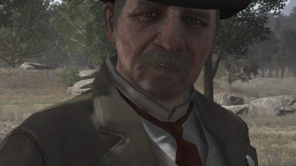
Edgar Ross
En 1911, Ross retient Abigail et Jack pour obliger John à traquer ses anciens compagnons, et s'en sert plus d'une fois pour le provoquer (voir la biographie). Il mène l'assaut contre le ranch.

Archer Fordham
Fordham est, avec Ross, l'un des deux agents principaux du Bureau qui retiennent Abigail et Jack en 1911. Il accompagne Ross quand la libération de la famille est annoncée à John après la mort de Dutch.
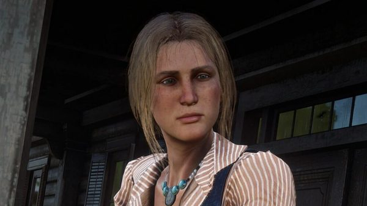
Bonnie MacFarlane
Abigail fait la connaissance de Bonnie dans "Old Friends, New Problems", quand elle accompagne John qui apporte des sacs de maïs au MacFarlane's Ranch. En chemin, elle veut savoir si Bonnie est mariée et à quoi elle ressemble, et assure qu'elle est curieuse plutôt que jalouse. Au ranch, elle remercie Bonnie d'avoir sauvé la vie de John "and for teachin' the miserable old goat some manners" (et d'avoir appris les bonnes manières à ce vieux bouc). Au retour, elle trouve Bonnie jolie et la verrait bien en parfaite épouse de fermier, puis se reprend : "I'm only teasin'. I like her, and I'm glad she saved your life" (je te taquine ; elle me plaît bien, et je suis contente qu'elle t'ait sauvé la vie). Elle ajoute que Bonnie a rougi en voyant John.

Andrew Milton
Milton aborde Arthur, avec Ross, pendant la partie de pêche qu'Abigail a demandée, et capture Hosea pendant la diversion qu'elle prépare avec lui à la banque. Au chapitre 6, ses hommes s'emparent d'elle à l'extérieur du camp, et il la retient à Van Horn. C'est là qu'elle l'abat, alors qu'il tient Arthur en joue.

Angelo Bronte
Les Braithwaite livrent Jack, enlevé, à Bronte, qui le rend à Dutch, Arthur et John dans "Angelo Bronte, A Man of Honor". De retour à Shady Belle, Jack raconte à Hosea que la vie chez Bronte était agréable et qu'il dormait dans un lit, dans une chambre.

Catherine Braithwaite
Les Braithwaite enlèvent Jack à Clemens Point pour se venger du vol de leurs chevaux. Abigail reste au camp pendant que le gang prend le manoir d'assaut, et Jack ne s'y trouve pas.

Kieran Duffy
À Horseshoe Overlook, Jack lance des cailloux sur Kieran en expliquant que sa mère lui a toujours dit que les O'Driscoll étaient méchants. Abigail l'arrête et lui dit que jeter des cailloux, c'est une affaire de grands. À Shady Belle, Kieran vient s'excuser auprès d'elle. Il avait vu les Braithwaite s'approcher du camp sans deviner qu'ils en voulaient à Jack, et il assure qu'il aurait donné sa vie pour protéger le petit. Après sa mort, elle dit son incrédulité devant ce qu'on lui a fait.

Molly O'Shea
À Clemens Point, Molly vient se plaindre de Dutch auprès d'Abigail. Abigail lui dit qu'elle sait ce qu'elle ressent, puis lui répond sans détour que Dutch ne l'aimera jamais comme elle le voudrait. Molly le nie. Quand elle s'en va, Arthur fait remarquer à Abigail que Molly perd pied.

Lenny Summers
Lenny et Bill portent John, blessé, dans la cabane de Colter, suivis d'Abigail. Après le braquage de la banque de Saint-Denis, Abigail apprend à Dutch, à Lakay, qu'ils ont récupéré les corps de Lenny et d'Hosea à la morgue de la ville pour les enterrer ; les deux hommes reposent côte à côte dans le Bluewater Marsh.

Sean MacGuire
À la fête donnée pour le retour de Sean au camp, Abigail dit à Arthur que ça fait du bien de le revoir.
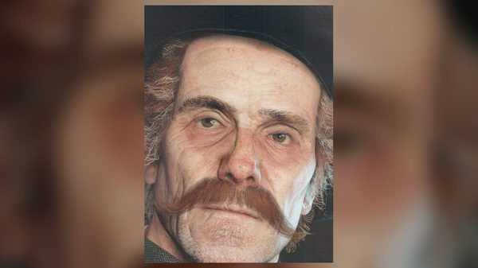
Orville Swanson
À Colter, quand Abigail annonce au gang la mort de Davey, Swanson lui répond qu'on ne pouvait rien faire de plus. Selon le wiki, dans "Who is Not Without Sin", Abigail et John se moquent du faible d'Arthur pour le révérend si Arthur passe devant eux en le portant.

Mary Linton
Abigail se souvient d'Arthur et de Mary jouant ensemble aux dominos. En 1907, John demande Abigail en mariage avec la bague qu'Arthur avait autrefois offerte à Mary.
Davey Callander
Davey est blessé à Blackwater. Dans la tempête de neige de la mission d'ouverture, c'est Abigail qui le dit mourant : la première réplique de Red Dead Redemption 2 est celle de Swanson qui transmet son avis à Dutch, "Abigail says he's dying, Dutch. We'll have to stop some place" (Abigail dit qu'il est en train de mourir, Dutch ; il faut s'arrêter quelque part).
Compétences, armes et chevaux
Au sein du gang
Abigail fait partie des membres du gang qu'Arthur peut affronter aux dominos : à Horseshoe Overlook au chapitre 2 et à Shady Belle au chapitre 4. Selon le Red Dead Wiki français, elle raconte avoir appris ce jeu dans un saloon, à huit ans. Pour le coup de la banque de Saint-Denis, elle joue les investisseuses immobilières venues de Nouvelle-Angleterre pendant les repérages avec Hosea (voir les relations). C'est aussi elle qui se procure la clé du coffre où Dutch garde l'argent. Le Red Dead Wiki lui attribue un Cattleman Revolver dans les deux jeux.
Travail, ranch et foyer
Abigail ne sait pas lire : dans "Old Friends, New Problems", c'est pour cette raison qu'elle tend à John le télégramme de Bonnie. Le post-scriptum de la lettre qu'elle laisse à Pronghorn Ranch en 1907 précise qu'une dame aimable du village l'a aidée à l'écrire. À Strawberry, elle trouve un emploi de ménage au cabinet du médecin. Après le générique de "American Venom", elle relance sans cesse John pour les corvées du ranch de Beecher's Hope. En 1911, c'est elle qui fait la cuisine. Dans "Old Friends, New Problems", elle monte avec John sur le chariot qui apporte les sacs de maïs au ranch des MacFarlane.
Chevaux
Le Red Dead Wiki lui attribue un Tennessee Walker rouan rouge. Dans "Red Dead Redemption", Sadie lui cède son propre cheval pour fuir Van Horn. En 1911, dans "The Last Enemy That Shall Be Destroyed", John la fait monter avec Jack sur un même cheval, dans la grange, et les fait sortir par la porte de derrière.
Missions
Le Red Dead Wiki anglais recense pour Abigail 28 missions principales de Red Dead Redemption 2, de l'arrivée à Colter jusqu'au mariage à Beecher's Hope, quatre missions de Red Dead Redemption et trois d'Undead Nightmare. L'édition française compte 26 missions pour Red Dead Redemption 2 : elle omet "Eastward Bound", "Fleeting Joy" et "Trying Again", et ajoute "A Kind and Benevolent Despot", une mission de Guarma où elle n'apparaît pas ; sa page ne la cite qu'à travers Dutch, qui se demande comment elle a pu s'échapper de la banque. Pour Red Dead Redemption, elle ajoute quatre missions à Beecher's Hope. Le tableau ci-dessous reprend aussi "Advertising, The New American Art" : la page de cette mission la désigne comme l'une des deux donneuses de mission, alors qu'aucune des deux listes ne la retient.
Red Dead Redemption 2, chapitres 1 à 6
| Mission | Chapitre | Rôle d'Abigail |
|---|---|---|
| Outlaws from the West | 1. Colter | Fait route avec le gang dans la neige après Blackwater. Swanson rapporte à Dutch qu'Abigail juge Davey Callander mourant. À Colter, elle entre dans la cabane devant Bill et Arthur, qui portent le corps de Davey sur un brancard, et annonce sa mort aux autres. |
| Enter, Pursued by a Memory | 1. Colter | Donneuse de mission. John n'a pas reparu depuis deux jours ; elle demande à Arthur d'aller le chercher, et Hosea appuie sa demande. Quand Arthur et Javier ramènent John, elle les remercie tous les deux, puis lance à John qu'il est tombé plus bas que jamais. |
| Who the Hell is Leviticus Cornwall? | 1. Colter | Amène Jack, qui voulait voir son père, dans la cabane où John est alité. Elle échange des piques avec John devant Dutch, puis ressort avec Jack. |
| Eastward Bound | 1. Colter | Aide Charles à conduire John, blessé, jusqu'à un chariot avant que le gang ne quitte la montagne. À Horseshoe Overlook, elle rejoint Susan avec les autres pendant qu'Arthur et Dutch s'installent à une table. |
| A Fisher of Men | 2. Horseshoe Overlook | Donneuse de mission. Elle demande à Arthur de s'occuper un peu de Jack, qui a l'air abattu, et il l'emmène pêcher. À leur retour, Jack lui offre un collier de fleurs. Elle remarque l'air soucieux d'Arthur et lui demande ce qui ne va pas ; il réserve à Dutch le récit de sa rencontre avec Milton et Ross. |
| Advertising, The New American Art | 3. Clemens Point | Donneuse de mission avec Hosea, selon la page de la mission. Elle prévient Arthur que Hosea l'attend près du moonshine volé, Dutch ayant confié une autre tâche à John. |
| Blood Feuds, Ancient and Modern | 3. Clemens Point | Apprend à Arthur, de retour de l'embuscade de Rhodes ("A Short Walk in a Pretty Town"), que Jack a disparu. Le gang en conclut que les Braithwaite l'ont enlevé, et Dutch part pour Braithwaite Manor avec sept hommes pour le retrouver. |
| The Battle of Shady Belle | 3. Clemens Point | Citée par le wiki. La page de la mission ne l'évoque qu'à travers John, inquiet de sa réaction tant que Jack reste introuvable. |
| Angelo Bronte, a Man of Honor | 4. Saint-Denis | Laisse éclater sa joie quand Dutch, Arthur et John ramènent Jack de chez Bronte. Le soir même, le gang fait la fête à Shady Belle pour son retour. |
| Horsemen, Apocalypses | 4. Saint-Denis | Se met à l'abri dans la maison de Shady Belle avec Mary-Beth, Strauss, Jack et Susan quand les O'Driscoll attaquent le camp. |
| Banking, The Old American Art | 4. Saint-Denis | Monte la diversion avec Hosea pendant que les autres entrent dans la Lemoyne National Bank. Milton capture Hosea pendant la diversion ; Abigail ne réapparaît plus dans la mission. |
| Fleeting Joy | 5. Guarma | À Lakay, elle apprend à Dutch, de retour de Guarma, que les corps de Hosea et de Lenny ont été repris à la morgue et enterrés. Elle lui rappelle que John est en prison ; comme Dutch remet le sauvetage à plus tard, elle demande à Arthur et à Sadie de libérer John, et ils acceptent. |
| That's Murfree Country | 5. Guarma | Citée par le wiki pour l'installation du gang à Beaver Hollow. La page de la mission ne lui attribue aucune action propre. |
| Visiting Hours | 6. Beaver Hollow | À Copperhead Landing, elle demande à Arthur et à Sadie de l'emmener à Sisika. Ils refusent : ce serait une personne de plus à protéger. Elle s'incline et les remercie. |
| A Rage Unleashed | 6. Beaver Hollow | Citée par le wiki. La page de la mission ne lui attribue aucune action propre. |
| Red Dead Redemption | 6. Beaver Hollow | Donneuse de mission. Enlevée par les hommes de Milton à l'extérieur du camp, alors qu'elle se trouve avec Tilly et Jack, elle est retenue à Van Horn. Elle se libère et abat Milton, qui tient Arthur en joue. Pendant la fuite, Arthur lui apprend que John a été tué ou capturé. Avant de partir avec Sadie pour Copperhead Landing, elle remet à Arthur la clé du coffre de Dutch. |
Red Dead Redemption 2, épilogue
Abigail est absente de Beecher's Hope pendant les premières missions du second épilogue. Dans "Home Improvement for Beginners", Uncle se moque de l'espoir de John de la reconquérir ; dans "A New Jerusalem", John lui écrit une lettre une fois la maison construite. Aucune de ces deux missions ne la montre.
| Mission | Partie | Rôle d'Abigail |
|---|---|---|
| The Wheel | Épilogue 1 : Pronghorn Ranch | Assise à côté de John sur le chariot, alors que la famille doit de nouveau partir, elle lui reproche d'avoir tiré sur un homme. Ils choisissent Strawberry. En ville, elle trouve une place de femme de ménage chez le médecin. |
| Simple Pleasures | Épilogue 1 : Pronghorn Ranch | Arrive à Pronghorn Ranch avec Jack et s'installe dans la cabane. Elle prévient John que son imprudence les met en danger, puis lui confie qu'elle est lasse de fuir et veut se poser. |
| Farming, For Beginners | Épilogue 1 : Pronghorn Ranch | Au petit déjeuner, elle parle à John de son travail chez le médecin. |
| Fatherhood, For Beginners | Épilogue 1 : Pronghorn Ranch | Convainc John d'aller faire du cheval avec Jack, sur un poney prêté par Duncan Geddes. |
| Fatherhood, For Idiots | Épilogue 1 : Pronghorn Ranch | Donneuse de mission. Elle évoque un prêt bancaire pour acheter Beecher's Hope, et le couple se dispute devant Jack. Elle demande à John de lui rapporter un colis de Strawberry. Au retour, Jack la bouscule pour rentrer, et John finit par avouer qu'un homme qui le connaissait leur a tiré dessus. |
| Old Habits | Épilogue 1 : Pronghorn Ranch | Interrompt la bagarre entre John et le chef des Laramie, qui s'en prend alors à elle. Elle reproche ensuite à John d'avoir rompu sa promesse de renoncer à la violence. |
| Jim Milton Rides, Again? | Épilogue 1 : Pronghorn Ranch | En colère contre John, qui a pris part au combat contre les pillards Laramie. Il répond qu'il n'avait pas le choix et qu'il faisait son travail. |
| Motherhood | Épilogue 1 : Pronghorn Ranch | Absente : elle a quitté Pronghorn Ranch avec Jack. John trouve sa lettre et la chemise qu'elle lui a laissée en cadeau. |
| The Best of Women | Épilogue 2 : Beecher's Hope | Donneuse de mission. Une seule cinématique : elle revient à Beecher's Hope avec Jack après des mois de séparation et découvre la maison que John a bâtie avec Uncle et Charles. |
| Trying Again | Épilogue 2 : Beecher's Hope | Après la partie de pêche, John et elle rassurent Jack : Rufus, mordu par un serpent, sera remis dans quelques jours. |
| A Really Big Bastard | Épilogue 2 : Beecher's Hope | Donneuse de mission avec Sadie. Elle invite à déjeuner Sadie, qu'elle n'a pas revue depuis huit ans. Elle apprend que John chasse les primes, s'y oppose, puis le laisse partir avec Sadie sur un contrat sans grand risque. Elle refuse en revanche toute traque de Micah. |
| A New Future Imagined | Épilogue 2 : Beecher's Hope | Donneuse de mission. Après une dispute avec Uncle sur son peu d'ardeur au travail, elle passe une journée à Blackwater avec John : une photo au studio, un film à l'Imperial Theatre, puis une sortie en canoë sur le lac, où elle accepte sa demande en mariage. |
| American Venom | Épilogue 2 : Beecher's Hope | Donneuse de mission avec Sadie. Elle tente de répondre à la place de John quand Sadie apporte une piste vers Micah, puis le supplie de ne pas partir. À son retour, elle l'accueille. Le générique montre leur mariage et une danse devant la maison ; dans la scène finale, elle dit à John que le ranch, c'est chez eux. |
Red Dead Redemption 2 : autres activités
| Activité | Chapitre | Rôle d'Abigail |
|---|---|---|
| Errand Boy | 2. Horseshoe Overlook | Fait partie des membres du camp qui peuvent solliciter Arthur : elle lui demande 5 dollars. |
| Dominoes | 2 et 4 | Fait partie des membres du camp avec qui Arthur peut jouer aux dominos, avec Hosea et Mary-Beth (et Pearson au chapitre 4). |
Red Dead Redemption
Retenue par le Bureau avec Jack pendant l'essentiel du jeu, Abigail n'apparaît en personne qu'une fois John revenu à Beecher's Hope. Le wiki français compte aussi "By Sweat and Toil", "A Continual Feast", "John Marston and Son" et "Wolves, Dogs and Sons" ; leurs pages ne la citent que parmi les personnes que le joueur ne doit pas blesser, tout comme celle de "Spare the Love, Spoil the Child".
| Mission | Acte | Rôle d'Abigail |
|---|---|---|
| The Outlaw's Return | Acte III : West Elizabeth | Donneuse de mission. Elle accueille John au ranch à coups d'insultes et de poing : elle le croyait mort. Elle lui demande s'il a revu Dutch et Bill, et s'il est retourné vers eux. C'est la première mission où elle apparaît à l'écran. |
| Pestilence | Acte III : West Elizabeth | Donneuse de mission. Aux fourneaux, elle parle avec John de l'avenir de Jack, puis aperçoit les corbeaux qui pillent le silo et envoie John s'en occuper. |
| Old Friends, New Problems | Acte III : West Elizabeth | Donneuse de mission. Un télégramme de Bonnie MacFarlane réclame du maïs ; Abigail demande à John de le lire à voix haute. Elle l'accompagne au MacFarlane's Ranch, l'interroge sur Bonnie pendant le trajet, fait sa connaissance et, sur le chemin du retour, avoue qu'elle l'apprécie. |
| The Last Enemy That Shall Be Destroyed | Acte III : West Elizabeth | Après la mort d'Uncle, elle court jusqu'à la grange avec Jack. John les fait monter à cheval ; John et elle se disent leur amour avant que le cheval ne sorte par la porte de derrière. Quand les coups de feu cessent, elle demande à Jack de faire demi-tour. Ils trouvent John mort et l'enterrent sur la colline, à côté d'Uncle. La scène finale, en 1914, montre sa tombe à côté de celle de John. |
Undead Nightmare (hors continuité)
Undead Nightmare se déroule hors de la continuité de la série. Deux des trois missions retenues par le wiki se passent à Beecher's Hope ; la troisième, à Escalera, s'achève quand John reçoit l'ordre de rentrer auprès des siens.
| Mission | Jeu | Rôle d'Abigail |
|---|---|---|
| Love in the Time of Plague | Undead Nightmare | Elle croyait Uncle avec John et lui assure qu'Uncle sait se débrouiller. Dans la nuit, Uncle, devenu mort-vivant, la poursuit hors de la maison et la mord. Elle se transforme et mord Jack ; John les ligote tous les deux. |
| A Civilized Man | Undead Nightmare | Citée par le wiki. Elle n'apparaît pas sur la page de la mission : à la fin, la voix d'Ayauhtéotl dit à John de retourner auprès des siens. |
| On a Pale Horse | Undead Nightmare | La page du personnage la dit seulement mentionnée, mais celle de la mission montre John qui retrouve sa femme et son fils, toujours attachés mais libérés de l'infection, et les serre contre lui. |
Personnages notables tués par Abigail
Le Red Dead Wiki n'attribue qu'un seul meurtre à Abigail.
| Nom | Mission | Circonstances |
|---|---|---|
| Andrew Milton | Red Dead Redemption | Histoire. Abattu d'une balle dans la tête avec le revolver de Sadie pendant qu'il se bat avec Arthur à Van Horn. La page de la mission précise que le coup part quoi que fasse le joueur pendant la lutte. |
Citations
Les répliques ci-dessous sont reproduites telles qu'elles sont prononcées dans le jeu, en anglais, avec la mission et la personne à qui elles s'adressent. La plupart sont vérifiées sur les transcriptions des missions. Celles de "The Wheel" et de "A New Future Imagined" proviennent d'encadrés du Red Dead Wiki ; celles sur Strawberry, sur les moutons et celles du multijoueur, de sa liste de citations, qui ne précise pas la mission. Les répliques déjà citées dans la personnalité, sous "Dans ses propres mots", ne sont pas reprises ici. Le wiki ne propose aucune transcription des répliques d'Abigail dans Undead Nightmare.
Red Dead Redemption 2, chapitres 1 et 2
Davey's dead.
Outlaws from the West (RDR2, chapitre 1), au gang réuni autour du corps de Davey Callander, dans la cabane de Colter. Traduction : « Davey est mort. »You're a rotten man, John Marston.
Who the Hell is Leviticus Cornwall? (RDR2, chapitre 1), à John ; Dutch ajoute que c'est un idiot et que tout le monde le sait. Traduction : « Tu es un sale type, John Marston. »Because he likes you and, well... you know his father's useless.
A Fisher of Men (RDR2, chapitre 2), à Arthur, qui lui demande pourquoi elle le choisit pour sortir Jack ; c'est l'une de ses deux réponses possibles, l'autre étant qu'il fait ce qu'il dit. Traduction : « Parce qu'il t'aime bien et, bon... tu sais que son père est bon à rien. »
Red Dead Redemption 2, chapitre 6
Horrible man.
Red Dead Redemption (RDR2, chapitre 6), après avoir abattu Milton à Van Horn. Traduction : « Quel homme abominable. »Call yourself men? You pathetic sons of bitches.
Red Dead Redemption (RDR2, chapitre 6), aux Pinkerton qui tirent sur Arthur, Sadie et elle pendant la fuite de Van Horn. Traduction : « Et vous vous dites des hommes ? Pauvres fils de garce. »The bastards grabbed me outside camp... I was with Tilly and Jack... it happened so fast, I couldn't do anything.
Red Dead Redemption (RDR2, chapitre 6), à Sadie, pendant la même fuite. Traduction : « Ces salauds m'ont attrapée près du camp... J'étais avec Tilly et Jack... Ça s'est passé si vite que je n'ai rien pu faire. »
Red Dead Redemption 2, épilogue
John... I love you. Don't you forget that... not ever now.
The Wheel (RDR2, épilogue 1), à John (encadré de la page du personnage sur le wiki). Traduction : « John... je t'aime. Ne l'oublie pas... plus jamais, maintenant. »John, I... I never... I didn't know it mattered to you.
A New Future Imagined (RDR2, épilogue 2), à John, quand il la demande en mariage sur le lac de Blackwater (encadré de la page de la mission). Traduction : « John, je... je n'avais jamais... Je ne savais pas que ça comptait pour toi. »What's for dinner? Away with you, you no good parasite... you cook.
American Venom (RDR2, épilogue 2), à Uncle, qui demande ce qu'il y a pour dîner ; John trouve l'idée plutôt bonne. Traduction : « Ce qu'il y a pour dîner ? Fiche le camp, espèce de parasite bon à rien... C'est toi qui cuisines. »I'm begging you. No! You'd risk all this? For what? For Micah?!
American Venom (RDR2, épilogue 2), à John, qui prend ses armes pour partir sur la piste de Micah avec Sadie et Charles. Traduction : « Je t'en supplie. Non ! Tu risquerais tout ça ? Pour quoi ? Pour Micah ?! »Alright, John Marston... since you bought this millstone around our necks, we better try and keep this place going.
American Venom (RDR2, épilogue 2), à John, sur la colline qui domine le ranch, après le générique. Traduction : « Bon, John Marston... puisque tu nous as mis ce boulet au pied, on ferait bien d'essayer de faire tourner l'endroit. »
Red Dead Redemption 2, sans mission précisée
So, you saved the silly bastard's life then you and him go robbing sheep?
Red Dead Redemption 2, à Arthur (liste de citations du wiki). Traduction : « Alors tu as sauvé la vie de cet abruti, et ensuite vous partez voler des moutons ensemble ? »I bet that sign says Strawberry, don't it?
Red Dead Redemption 2 (liste de citations du wiki). Traduction : « Je parie que ce panneau dit Strawberry, pas vrai ? »
Red Dead Redemption, acte III
You no-good, hillbilly, piece of shit. I thought you was dead. I thought you was dead, John.
The Outlaw's Return (RDR1, acte III), à John, qu'elle frappe à son arrivée au ranch. Traduction : « Espèce de bouseux bon à rien, de sale ordure. Je te croyais mort. Je te croyais mort, John. »Yes, didn't I say, rather than some prison, they actually kept me incarcerated in a cooking school for young ladies.
The Outlaw's Return (RDR1, acte III), à John, qui espère qu'elle a appris à cuisiner. Traduction : « Mais oui, je ne te l'ai pas dit ? Au lieu d'une prison, ils m'ont enfermée dans une école de cuisine pour jeunes filles. »The same thing I've been cooking the past 15 years with the hope of poisoning you.
Pestilence (RDR1, acte III), à John, qui lui demande ce qu'elle prépare. Traduction : « La même chose que depuis quinze ans, dans l'espoir de t'empoisonner. »Given what we was and where we came from, I think we've gone and done okay. I look at Jack ...I look at him and, I think we've been blessed. Maybe he can be something more.
Pestilence (RDR1, acte III), à John, dans la cuisine. Traduction : « Vu ce qu'on était et d'où on vient, je trouve qu'on ne s'en est pas si mal sortis. Quand je regarde Jack... quand je le regarde, je me dis qu'on a eu de la chance. Il pourra peut-être devenir quelqu'un. »And he ain't gonna marry no orphaned working girl running with a bunch of hucksters, neither.
Pestilence (RDR1, acte III), à John, à propos de Jack ; John répond que s'il en rencontre une comme elle, il espère bien qu'il l'épousera. Traduction : « Et il n'épousera pas non plus une orpheline de petite vertu qui traîne avec une bande d'escrocs. »Stop. For an illiterate gunslinger, you sure know how to make a girl blush.
Pestilence (RDR1, acte III), à John, en réponse à ce compliment. Traduction : « Arrête. Pour un pistolero illettré, tu sais drôlement faire rougir une fille. »Of Bill? You gotta be kidding me. He was only frightening if you was afraid of dumb fools.
Old Friends, New Problems (RDR1, acte III), à John, qui raconte que les gens de New Austin avaient peur de Bill. Traduction : « De Bill ? Tu te moques de moi. Il ne faisait peur qu'à ceux qui ont peur des imbéciles. »A family that left you for dead. You knew the truth, John, and they hated you for it.
Old Friends, New Problems (RDR1, acte III), à John, qui dit que le gang restait une sorte de famille. Traduction : « Une famille qui t'a laissé pour mort. Tu voyais clair, John, et ils te l'ont fait payer. »It ain't the first time I had a gun to my head, John. You're forgettin' your marriage proposal.
Old Friends, New Problems (RDR1, acte III), à John, qui lui demande si les hommes du gouvernement l'ont bien traitée ; il répond "Very funny" (très drôle). Traduction : « Ce n'est pas la première fois qu'on me braque un pistolet sur la tempe, John. Tu oublies ta demande en mariage. »I don't know, John. How many times can we start again? An outlaw and a workin' girl. We ain't exactly farmers.
Old Friends, New Problems (RDR1, acte III), à John, qui promet qu'ils auront un jour un ranch comme celui des MacFarlane. Traduction : « Je ne sais pas, John. Combien de fois peut-on tout recommencer ? Un hors-la-loi et une fille de joie. On n'a rien de fermiers. »You stay out of trouble, John.
The Last Enemy That Shall Be Destroyed (RDR1, acte III), à John, dans la grange ; il répond "Ain't no trouble, Abigail. Ain't no trouble. I love you." (pas d'ennuis, Abigail, pas d'ennuis. Je t'aime). Traduction : « Ne va pas t'attirer d'ennuis, John. »Did you hear that? Jack, we have to go back for Pa!
The Last Enemy That Shall Be Destroyed (RDR1, acte III), à Jack, alors qu'ils s'éloignent du ranch à cheval. Traduction : « Tu as entendu ? Jack, il faut retourner chercher papa ! »
Multijoueur de Red Dead Redemption
La liste de citations du wiki donne 14 répliques pour son modèle multijoueur, reproduites ici telles qu'elles y figurent. L'une d'elles, "You've clearly had one too many blows to the head.", est proche d'une phrase qu'elle adresse à John dans "Old Friends, New Problems" : "You clearly had one too many blows to the head."
I see you ain't learn no manners.
Multijoueur de Red Dead Redemption (liste de citations du wiki). Traduction : « Je vois que tu n'as toujours pas appris les bonnes manières. »I've had enough of this.
Multijoueur de Red Dead Redemption (liste de citations du wiki). Traduction : « J'en ai assez. »Call yourself a man.
Multijoueur de Red Dead Redemption (liste de citations du wiki). Traduction : « Et tu te dis un homme. »What's the matter with you?!
Multijoueur de Red Dead Redemption (liste de citations du wiki). Traduction : « Mais qu'est-ce qui te prend ?! »You really are a strange man.
Multijoueur de Red Dead Redemption (liste de citations du wiki). Traduction : « Tu es vraiment un drôle de type. »You've clearly had one too many blows to the head.
Multijoueur de Red Dead Redemption (liste de citations du wiki). Traduction : « Tu as dû prendre un coup de trop sur la tête. »You damn fool.
Multijoueur de Red Dead Redemption (liste de citations du wiki). Traduction : « Espèce d'idiot. »Oh, ain't you quite the gentlemen all the sudden.
Multijoueur de Red Dead Redemption (liste de citations du wiki, orthographe d'origine). Traduction : « Oh, quel gentleman, tout à coup. »You think I'm afraid of you.
Multijoueur de Red Dead Redemption (liste de citations du wiki). Traduction : « Tu crois que j'ai peur de toi. »I'll kill you mah self!
Multijoueur de Red Dead Redemption (liste de citations du wiki). Traduction : « Je vais te tuer moi-même ! »Oh, like hittin women do you?!
Multijoueur de Red Dead Redemption (liste de citations du wiki). Traduction : « Ah, on aime frapper les femmes, hein ?! »Are you completely insane?!
Multijoueur de Red Dead Redemption (liste de citations du wiki). Traduction : « Tu as complètement perdu la tête ?! »You idiot!
Multijoueur de Red Dead Redemption (liste de citations du wiki). Traduction : « Imbécile ! »Clumsy oaf.
Multijoueur de Red Dead Redemption (liste de citations du wiki). Traduction : « Gros balourd. »
Conception et interprétation
Le casting
Dans Red Dead Redemption (2010), Abigail est interprétée par Sophia Marzocchi, qui lui prête sa voix et ses mouvements en capture. Dans Red Dead Redemption 2 (2018), le rôle revient à Cali Elizabeth Moore, une actrice américaine qui assure elle aussi la voix et la capture de performance. D'après le Red Dead Wiki, Marzocchi figure au générique de Red Dead Redemption 2 pour de la capture de mouvement additionnelle. Le wiki signale aussi que des répliques enregistrées par elle subsistent dans les fichiers de la préquelle, signe à ses yeux qu'elle devait d'abord reprendre le rôle. Les deux autres membres de la famille ont connu des sorts différents : Rob Wiethoff joue John dans les deux jeux, tandis que Jack, incarné par Josh Blaylock dans le premier, est joué dans la préquelle par Marissa Buccianti et Ted Sutherland, un jeune enfant assurant la capture des premières scènes.
Le 26 octobre 2019, Moore publie sur Instagram une image de son tout premier jour sur le plateau de capture de Rockstar, en précisant qu'il s'agit de la première scène qu'elle a tournée dans la peau d'Abigail. Le Red Dead Wiki y reconnaît le début de "A New Future Imagined", la mission de l'épilogue où John emmène Abigail à Blackwater.
Cinq ans avec les Marston
Moore décrit le tournage à Cass Marshall, de Polygon, dans un article publié le 3 mai 2019. Il dure cinq ans, et les acteurs viennent jouer une ou deux fois par mois. L'essentiel du travail se fait sur le plateau de capture, où les scènes sont jouées en entier, "as if it was theater" (comme au théâtre). Pendant les premiers mois, raconte-t-elle, seuls les interprètes de John et de Jack sont là avec elle : la famille se construit avant l'arrivée du reste de la distribution. Au moment de tourner la demande en mariage, tous trois se connaissent depuis cinq ans et ont rencontré leurs conjoints respectifs. Polygon précise que les scènes sont tournées dans le désordre, et que les acteurs ne découvrent la chronologie complète que tard dans la production. Certaines séances sont consacrées aux cinématiques de l'histoire, d'autres aux échanges facultatifs du camp. Selon Moore, on apprenait quelque chose de nouveau sur son personnage à chaque venue, et chaque scène était reprise jusqu'à être parfaite.
Moore qualifie le parcours d'Abigail de "a dream as an actress" (un rêve d'actrice) et juge le réalisateur Rod Edge "brilliant" (brillant). Son gag récurrent préféré est un écureuil que John ne cesse de ramener dans la maison pendant l'épilogue et qu'Abigail ne cesse de cacher. Elle parle d'une relation "tumultuous" (orageuse) entre les deux époux, John passant du jeune homme sauvage au père de famille. Elle décrit une Abigail qui a "learned to make her own happiness where she can" (appris à trouver son bonheur où elle peut), voit où va le gang et tente de remettre John dans le droit chemin. Elle ajoute qu'Abigail "has a little bit of a temper" (a un peu de caractère) et peut s'emporter en un instant, un trait qu'elle a pu jouer dans les scènes du camp. La relation entre Hosea et Abigail reflète en partie, selon elle, celle qu'elle entretient avec Curzon Dobell, l'interprète de Hosea, qu'elle décrit comme un "lovely man" (un homme adorable).
Moore raconte à Polygon que l'enfant qui jouait Jack dans les premières scènes avait environ cinq ans, et qu'il était difficile de ne pas éprouver pour lui des sentiments maternels. Elle retient la scène du retour de Jack au camp : il saute de cheval et court vers Abigail en criant "mama" (maman), et elle n'a eu aucun mal à fondre en larmes. Mère elle-même, elle s'est demandé ce que ce serait d'ignorer pendant des jours où se trouve son enfant. Dans l'article, Marshall oppose Abigail aux membres du gang qui cachent leurs faiblesses, et la décrit comme "openly vulnerable and emotional" (ouvertement vulnérable et émotive). Moore ajoute que l'histoire est douce-amère, puisqu'elle mène aux événements du premier jeu, et dit de John : "You get to see what made John that kind of man" (on voit ce qui a fait de John l'homme qu'il est).
La demande en mariage
Dans un article de GamesRadar+ signé Rachel Weber et publié le 7 mars 2019, Moore revient sur la demande en mariage en canoë, sur le lac de Blackwater, dans "A New Future Imagined". Elle et Rob Wiethoff étaient alors "mo-cap husband and wife for years" (mari et femme en capture depuis des années), et ils répètent leur texte ensemble dans la loge. Tous deux fondent en larmes pendant cette répétition et décident d'arrêter pour garder l'émotion pour le tournage. Selon elle, la scène n'a été tournée que deux fois. Les deux acteurs sont mariés, et il leur était facile, dit-elle, de repenser chacun à leur propre demande. Moore cite aussi une scène où Abigail assure à Sadie Adler, tout juste arrivée au camp, qu'elle est en sécurité, qu'elle a des amis ici et que le temps guérira ses blessures ; un moment qu'elle qualifie de "such a sweet scene" (une scène si tendre).
Contenu coupé
Les fichiers de Red Dead Redemption 2 contiennent un modèle de buste supprimé pour Abigail. Une mission coupée, nommée "ind2", devait réunir Arthur, Micah, Hosea et Abigail pour mesurer la vitesse de réaction des forces de l'ordre, avant "Banking, The Old American Art" : Arthur y aurait posé de la dynamite sous le bâtiment de la Cornwall Freight and Commodities. La première mission d'une série supprimée consacrée à Eliza, une fille du camp, nommée "ELZ1", commençait par Abigail envoyant Arthur à sa recherche après sa fugue, au chapitre 1. Dans "A New Future Imagined", une cinématique montrant John et Abigail rentrant chez eux après leur journée à Blackwater a été coupée. Une illustration conceptuelle montre Arthur, John, Abigail et Jack ensemble.
Deux scènes de camp avec Abigail ont été supprimées. À Horseshoe Overlook, Micah, en train de boire, l'aurait invitée à venir s'asseoir près d'un vrai homme ; elle aurait répondu qu'elle lui en enverrait un quand elle en trouverait un, et il aurait ri doucement. À Beecher's Hope, Abigail se serait félicitée de la journée de travail honnête qu'elle et John venaient d'abattre, et John aurait répondu qu'elle était assez honnête comme ça. Dans Red Dead Redemption, des sous-titres restés dans les fichiers de "The Last Enemy That Shall Be Destroyed" laissent penser qu'Abigail devait d'abord être enlevée par un soldat pendant l'assaut du ranch, et que John aurait dû la secourir. Dans cette version, John aurait aussi récupéré son fusil dans la cuisine et pu choisir entre fuir, se battre ou se rendre.
Accueil
Avant la sortie
Dans un dossier de Game Informer consacré aux sept personnages du premier jeu qui reviennent dans la préquelle, publié le 28 septembre 2018, un mois avant la sortie, Jill Grodt présente Abigail comme une femme avec qui il ne faut pas plaisanter, aussi prompte à dégainer qu'à répliquer. Selon elle, ses années passées au milieu de personnages louches, dans les bars et les maisons closes, lui ont appris à jauger une pièce d'un coup d'œil ; elle a eu son fils avec John à dix-huit ans ; et un faux pas suffit à la montrer plus impitoyable que bien des hommes qui l'entourent.
Classements et commentaires
- WhatCulture, 16 novembre 2013 : dans une liste de David Michael Hughes consacrée aux personnages les plus marquants de Red Dead Redemption après John, Abigail obtient une mention honorable. Hughes admet que certains joueurs ont pu la trouver terne, peut-être parce que ses missions comptent parmi les moins mémorables, mais estime que son passé et sa volonté de changer la définissent, et qu'aucun personnage du jeu n'est plus proche de John.
- Game Informer, 27 décembre 2018 : 10e des 24 membres du gang Van der Linde dans le classement de la rédaction. Selon elle, Abigail change peu d'un jeu à l'autre, mais la préquelle explique pourquoi : c'est une femme avisée, tenue en marge de l'action, condamnée à regarder les idiots de sa vie répéter sans cesse les mêmes erreurs. La rédaction voit dans son désir d'une terre et d'une vie honnête "the series' seed of hope" (le germe d'espoir de la série), et la salue aussi pour avoir abattu Milton.
- TheGamer, 10 août 2019 : dans le classement des dix membres les plus importants du gang établi par Jerrad Wyche, John est 3e, et Wyche estime qu'Abigail peut figurer à ses côtés au même rang, les deux formant "a package deal" (un tout indissociable).
Autres médias et postérité
Multijoueur
Abigail devient un modèle de personnage jouable du multijoueur de Red Dead Redemption avec le Liars and Cheats Pack, sorti le 21 septembre 2010. Ce pack ajoute 15 personnages de l'histoire, ainsi que le poker, le poker menteur, des courses de chevaux et le mode Stronghold. On choisit Abigail dans la section Redemption de l'Outfitter, aux côtés de John, Jack, Bonnie MacFarlane, Leigh Johnson, Luisa Fortuna, Nigel West Dickens et Seth Briars.
En multijoueur, son modèle troque le haut bleu-violet et la longue jupe à carreaux roses de l'histoire contre un pantalon bleu et un haut à carreaux blancs et bleus, plus commodes pour monter à cheval. Le modèle de Luisa Fortuna est modifié de la même façon. Les versions de Red Dead Redemption sorties sur PlayStation 4 et Nintendo Switch le 17 août 2023, puis sur PC le 29 octobre 2024, comprennent l'histoire et Undead Nightmare, mais pas le multijoueur : le modèle d'Abigail n'y est donc pas disponible.
Promotion
Rockstar a diffusé une illustration officielle d'Abigail en morte-vivante pour Undead Nightmare. Le verso de la carte imprimée d'Undead Nightmare la montre elle aussi en morte-vivante, mais dans ses vêtements de fermière ; dans l'extension, elle n'est morte-vivante qu'en chemise de nuit.
Pour Red Dead Redemption 2, Rockstar a publié une nouvelle illustration officielle du personnage. Le 6 septembre 2018, Rockstar publie sur Twitter les portraits et les descriptions des membres du gang, et The Hollywood Reporter reprend la série le lendemain. Sur l'image qui réunit les 23 membres du gang, elle figure au premier rang, à côté de Jack.
Anecdotes
Dans toute la série
- John et Abigail portent les mêmes prénoms que John Adams, deuxième président des États-Unis, et son épouse Abigail Adams.
- Le couple partage aussi ses prénoms avec John Proctor et Abigail Williams, liés par une liaison secrète dans la pièce d'Arthur Miller Les Sorcières de Salem (The Crucible).
- Le prénom Abigail vient de l'hébreu ; le Red Dead Wiki français le traduit par "mon père se réjouit".
- Dans "Old Friends, New Problems" (1911), John lui assure qu'aux pires heures, l'idée de ses ragoûts de rat l'a fait tenir. Dans l'épilogue de 1907, John dit regretter la cuisine de Pearson.
Red Dead Redemption 2
- Au chapitre 2, une fois "A Fisher of Men" terminée, Jack peut demander à Arthur un dé à coudre pour remplacer celui de sa mère, qu'il a perdu.
- Sa réponse quand on la salue change avec l'époque : en 1899, elle dit à Arthur que ça ne va pas ; pendant l'épilogue, elle dit à John que ça va.
- Avant "American Venom", on peut entendre Jack lire une histoire à Abigail et à Uncle ; le livre est un roman à quatre sous de Frank Heck.
- Après le générique, le joueur peut demander à dîner dans la maison de Beecher's Hope entre 16 h et 20 h.
- John et Abigail discutent après le générique sur la colline où, selon la page du wiki consacrée à "American Venom", se déroule leur mariage pendant le générique. Dans Red Dead Redemption, les tombes de John, d'Abigail et d'Uncle se trouvent sur cette même colline.
Red Dead Redemption
- Ni Abigail ni John ne portent d'alliance. Le Red Dead Wiki français relève qu'il en va de même pour tous les personnages mariés du jeu.
- La tuer pendant une mission la fait échouer et renvoie le joueur au dernier point de contrôle. Avec le code d'invincibilité actif, tuer Abigail, Jack ou Uncle déclenche un bref tremblement de terre, et la mort suivante du joueur affiche "You have killed a member of your family" (vous avez tué un membre de votre famille) à la place de l'écran habituel.
- Avant "The Last Enemy That Shall Be Destroyed", deux marques sur la colline de Beecher's Hope indiquent l'emplacement des futures tombes de John et d'Abigail.
Undead Nightmare (hors continuité)
- Après la première mission d'Undead Nightmare, le joueur peut tuer Abigail et Jack, ligotés, mais il meurt lui aussi.
- Une fois l'extension terminée, deux contours noirs marquent l'emplacement où devraient se trouver les tombes d'Uncle et d'Abigail, à côté de celle de John.
Galerie
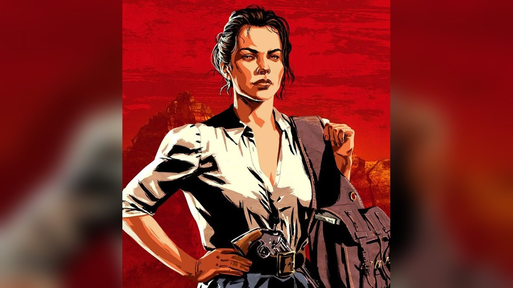
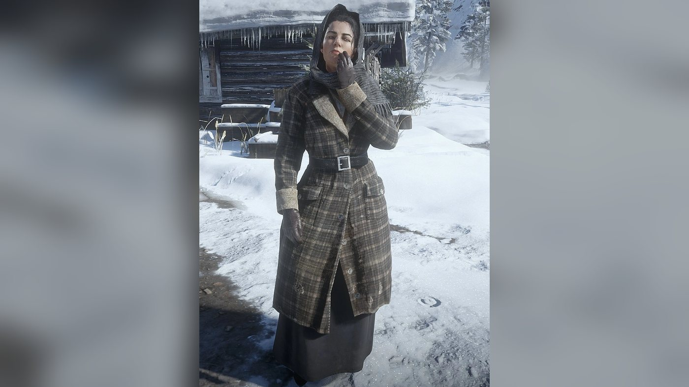
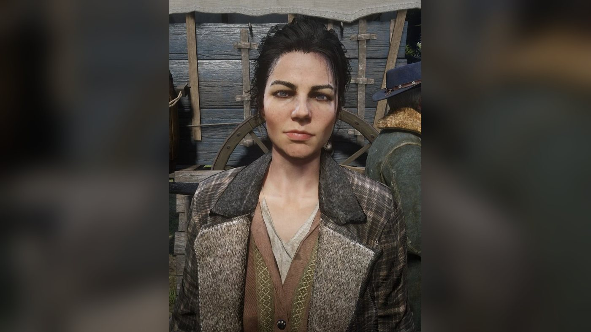
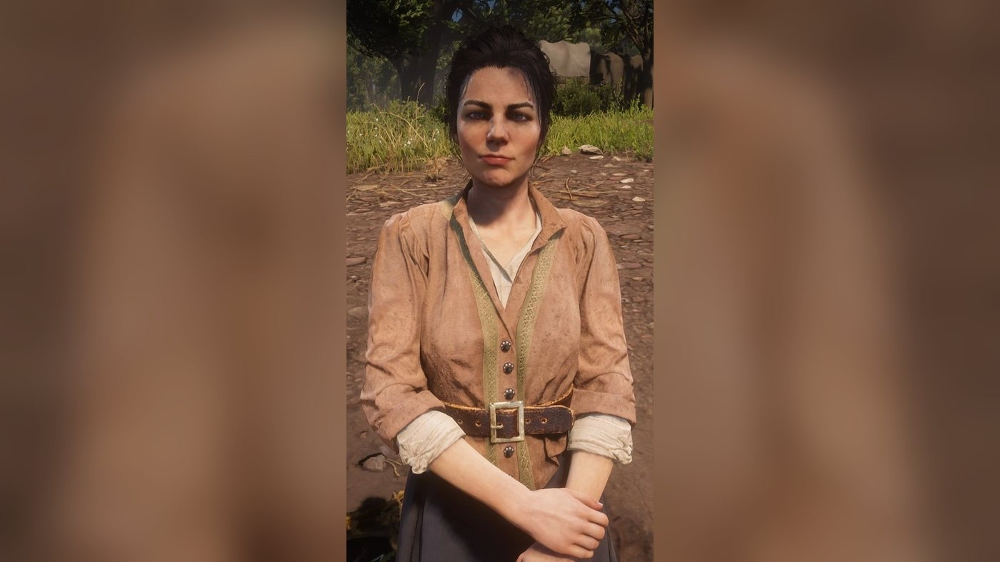
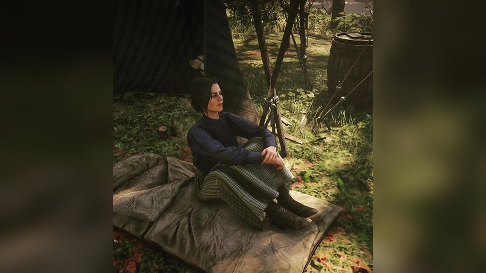
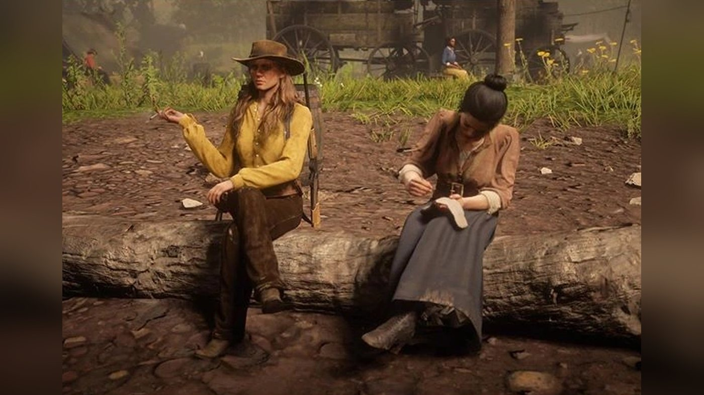
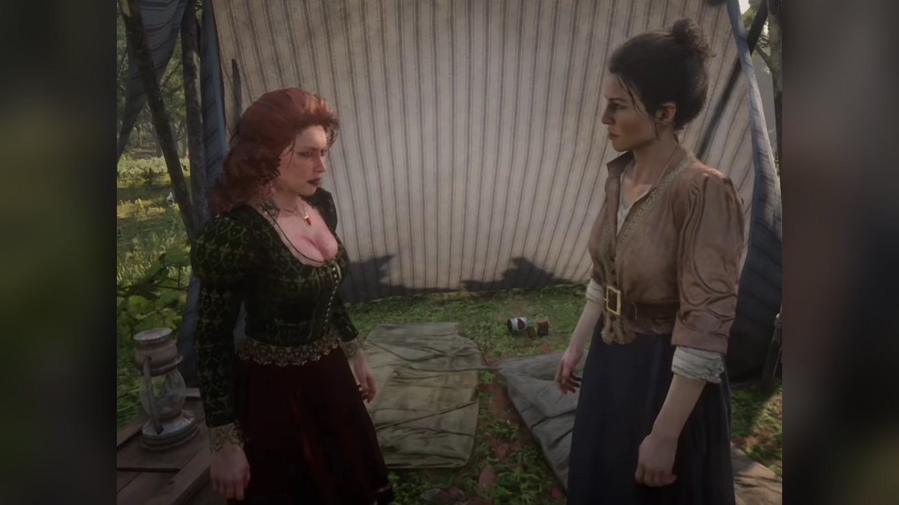
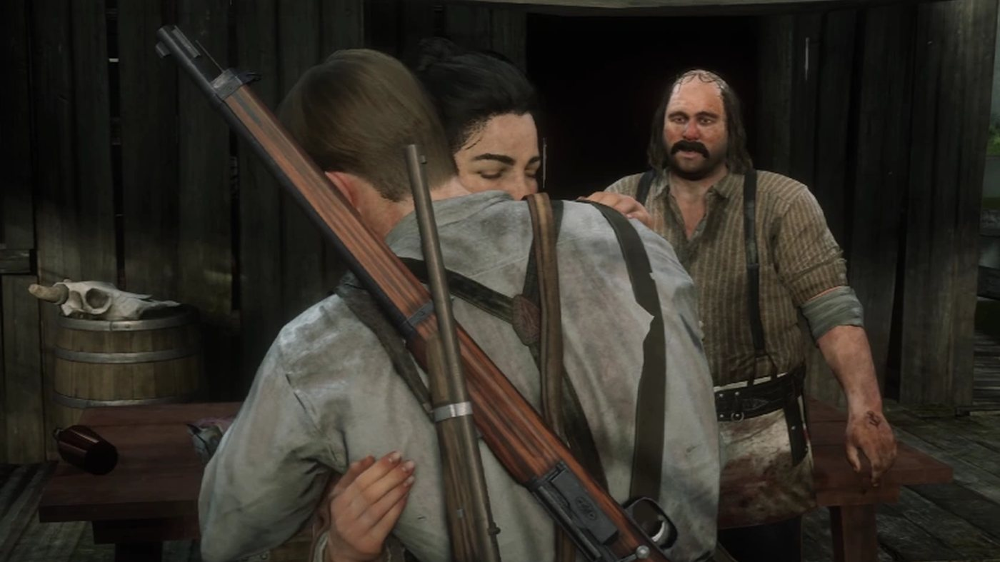
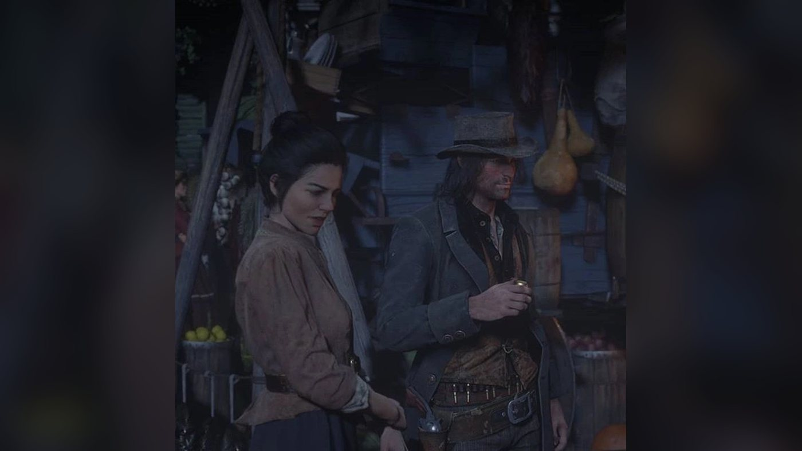
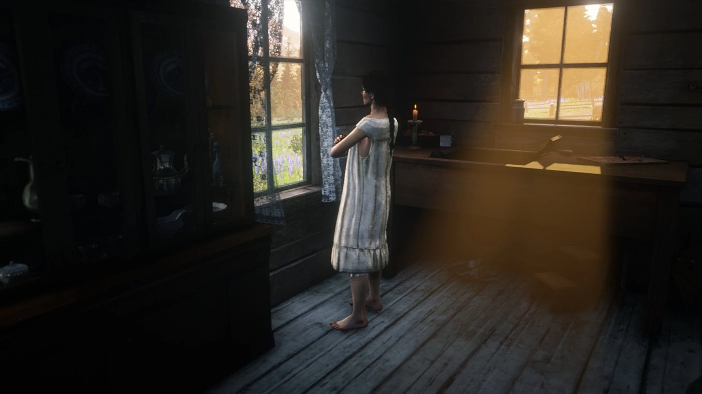
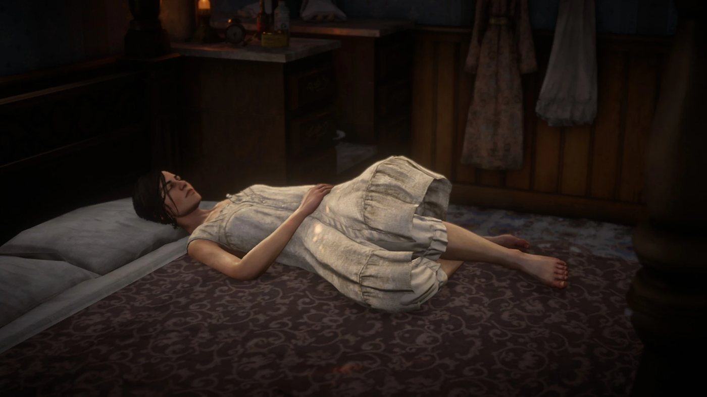
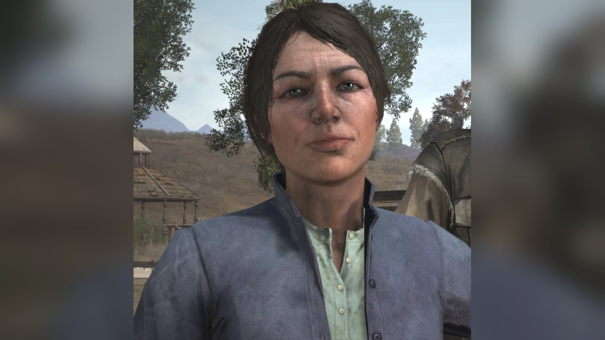
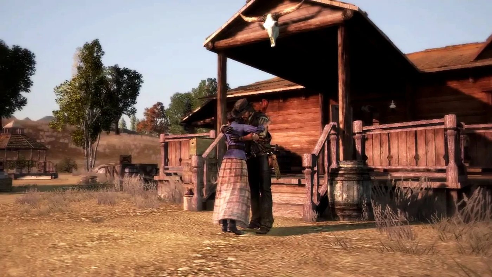
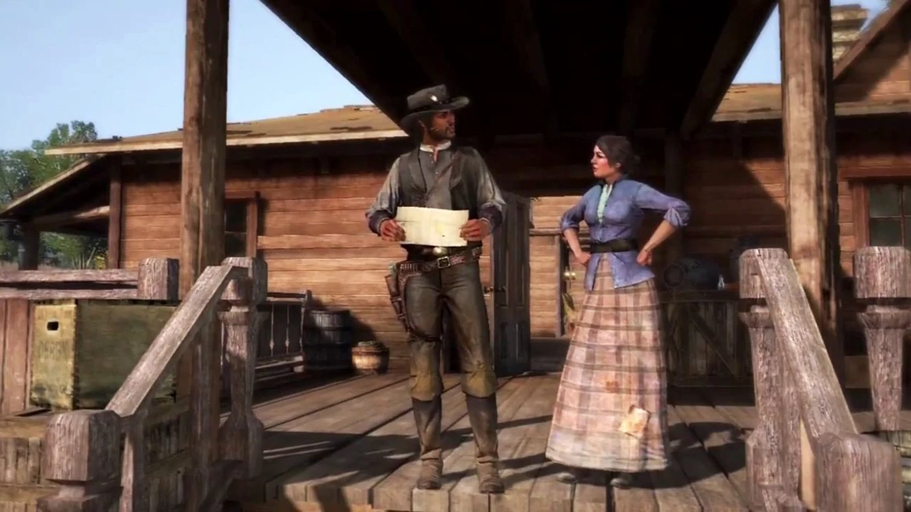
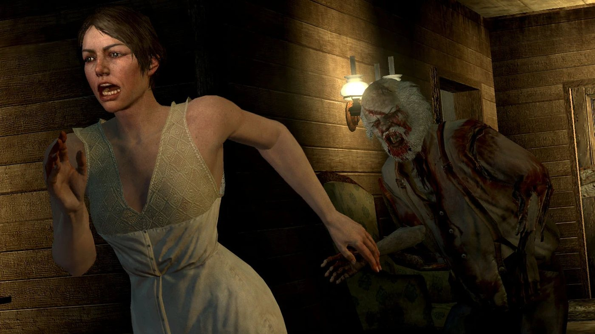
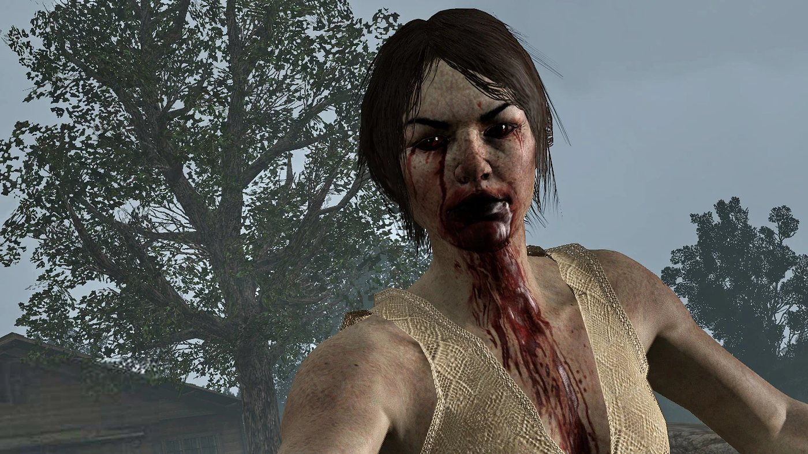